Introduction to BentoBox
Nicole Kramer, Eric S. Davis, Craig Wenger, Sarah Parker, Erika Deoudes, and Douglas H. Phanstiel
2021-05-06
Source:vignettes/introduction_to_bentobox.Rmd
introduction_to_bentobox.RmdOverview

BentoBox is a coordinate-based, genomic visualization package for R. Using grid graphics, BentoBox empowers users to programatically and flexibly generate multi-panel figures. Tailored for genomics, BentoBox allows users to visualize large, complex genomic datasets while providing exquisite control over the arrangement of plots.
BentoBox functions can be grouped into the following categories:
-
Page layout functions:
Functions for creating
BentoBoxpage layouts, drawing, showing, and hiding guides, as well as placing plots on the page. -
Reading functions:
Functions for quickly reading in large biological datasets.
-
Plotting functions:
Contains genomic plotting functions, functions for placing
ggplotsandbaseplots, as well as functions for drawing simple shapes. -
Annotation functions:
Enables users to add annotations to their plots, such as legends, axes, and scales.
-
Meta functions:
Functions that display
BentoBoxproperties or operate on otherBentoBoxfunctions, or constructors forBentoBoxobjects.
This vignette provides a best-practices guide for utilizing BentoBox. It begins with a Quick Start section that outlines usage examples for reading in and plotting the most commonly used genomic data. Then the following sections explore how BentoBox works in more detail, highlighting helpful topics that showcase the capabilities of BentoBox. For detailed usage of each function, see the function-specific reference examples with ?function() (e.g. ?bb_plotBedpe()).
Quick Start
Reading data
BentoBox handles a wide array of genomic data types in various formats and file types. Not only does it work with data.frames, data.tables, tibbles, and Bioconductor GRanges objects, but it can also read in common genomic file types like BED, BEDPE, bigWig, and .hic files. While files can be read directly into BentoBox plotting functions, BentoBox also provides functions for reading in these large genomic data sets to work with them within the R environment:
-
bb_readBigwig(): Read in entire bigWig files, or read in specific genomic regions or strands of bigWig data.
wholeFile <- bb_readBigwig("/path/to/bigWig")
region <- bb_readBigwig("/path/to/bigWig", chrom = "chr1", chromstart = 1000000, chromend = 2000000)
regionPlus <- bb_readBigwig("/path/to/bigWig", chrom = "chr1", chromstart = 1000000, chromend = 2000000,
strand = "+")-
bb_readHic(): Read in genomic regions of .hic files with various data resolutions and normalizations.
chrom <- bb_readHic("/path/to/hic", chrom = "chr1", resolution = 250000, res_scale = "BP", norm = "NONE")
chromRegion <- bb_readHic("/path/to/hic", chrom = "chr1", chromstart = 1000000, chromend = 2000000,
resolution = 10000, res_scale = "BP", norm = "KR")
twoChroms <- bb_readHic("/path/to/hic", chrom = "chr1", altchrom = "chr2",
resolution = 250000, res_scale = "BP")For other filetypes, we recommend reading in files with data.table or rtracklayer.
library(data.table)
data <- data.table::fread("/path/to/file")
library(rtracklayer)
data <- rtracklayer::import(con = "/path/to/file", format = "fileFormat")Quick plotting
BentoBox plotting functions contain 4 types of arguments:
Data reading argument (
data)Genomic locus arguments (
chrom,chromstart,chromend,assembly)Placement arguments (
x,y,width,height,just,default.units, …) that define where each plot resides on abb_pageAttribute arguments that affect the data being plotted or the style of the plot (
norm,fill,fontcolor, …) that vary between functions
The quickest way to plot data is to omit the placement arguments. This will generate a BentoBox plot that fills up the entire graphics window and cannot be annotated. These plots are only meant to be used for quick genomic data inspection and not as final BentoBox plots. The only arguments that are required are the data arguments and locus arguments. The examples below show how to quickly plot different types of genomic data with plot defaults and included data types. To use your own data, replace the data argument with either a path to the file or an R object as described above.
Hi-C matrices
## Load BentoBox
library(BentoBox)
## Load example Hi-C data
data("bb_imrHicData")
## Quick plot Hi-C data
bb_plotHicSquare(data = bb_imrHicData,
chrom = "chr21", chromstart = 28000000, chromend = 30300000)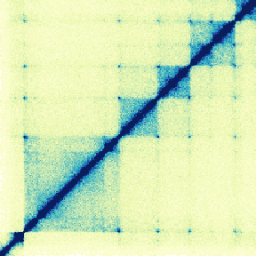
Signal tracks
## Load BentoBox
library(BentoBox)
## Load example signal data
data("bb_imrH3K27acData")
## Quick plot signal data
bb_plotSignal(data = bb_imrH3K27acData,
chrom = "chr21", chromstart = 28000000, chromend = 30300000)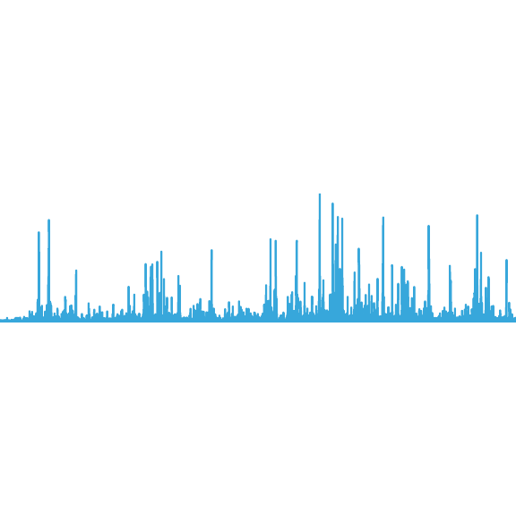
Gene tracks
## Load BentoBox
library(BentoBox)
## Load hg19 genomic annotation packages
library(TxDb.Hsapiens.UCSC.hg19.knownGene)
library(org.Hs.eg.db)
## Quick plot genes
bb_plotGenes(assembly = "hg19",
chrom = "chr21", chromstart = 28000000, chromend = 30300000)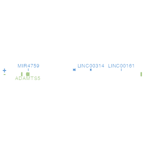
GWAS Manhattan plots
## Load BentoBox
library(BentoBox)
## Load hg19 genomic annotation packages
library(TxDb.Hsapiens.UCSC.hg19.knownGene)
## Load example GWAS data
data("bb_gwasData")
## Quick plot GWAS data
bb_plotManhattan(data = bb_gwasData, fill = c("steel blue", "grey"),
ymax = 1.1, cex = 0.20)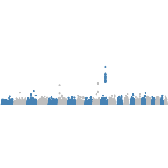
Plotting and annotating on the BentoBox page
To build complex, multi-panel BentoBox figures with annotations, we must:
- Create a
BentoBoxcoordinate page withbb_pageCreate().
bb_pageCreate(width = 3.25, height = 3.25, default.units = "inches")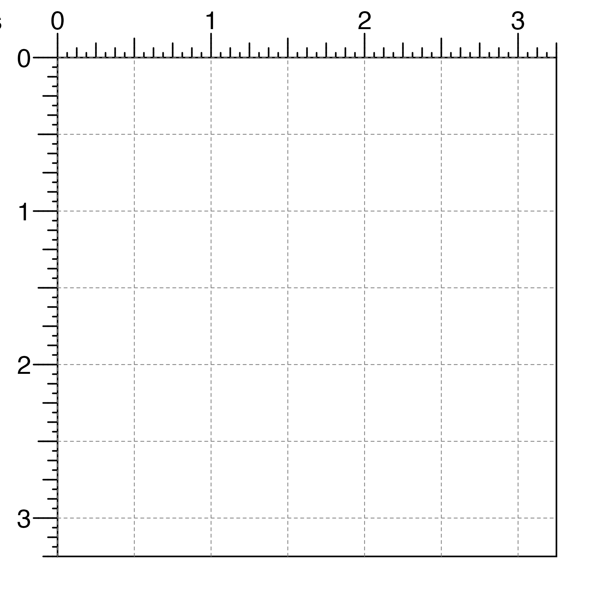
- Provide values for the placement arguments (
x,y,width,height,just,default.units) in plotting functions and save the output of the plotting function.
data("bb_imrHicData")
hicPlot <- bb_plotHicSquare(data = bb_imrHicData,
chrom = "chr21", chromstart = 28000000, chromend = 30300000,
x = 0.25, y = 0.25, width = 2.5, height = 2.5, default.units = "inches")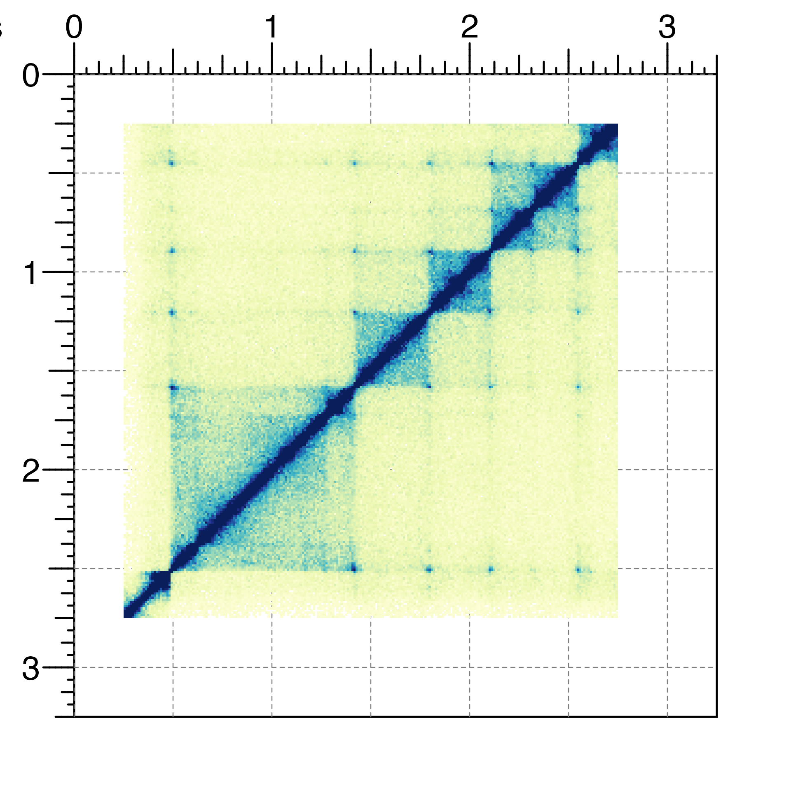
- Annotate
BentoBoxplot objects by passing them into theplotargument of annotation functions.
bb_annoHeatmapLegend(plot = hicPlot,
x = 2.85, y = 0.25, width = 0.1, height = 1.25, default.units = "inches")
bb_annoGenomeLabel(plot = hicPlot,
x = 0.25, y = 2.75, width = 2.5, height = 0.25, default.units = "inches")For more information about how to place plots and annotations on a BentoBox page, check out the section Working with plot objects.
Exporting plots
When a BentoBox plot is ready to be saved and exported, we can first remove all page guides that were made with bb_pageCreate():
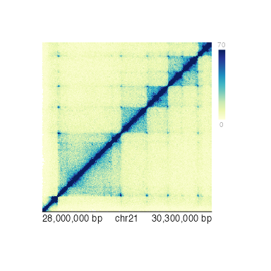
We can then either use the Export toggle in the RStudio plot panel, or save the plot within our R code as follows:
pdf(width = 3.25, height = 3.25)
bb_pageCreate(width = 3.25, height = 3.25, default.units = "inches")
data("bb_imrHicData")
hicPlot <- bb_plotHicSquare(data = bb_imrHicData,
chrom = "chr21", chromstart = 28000000, chromend = 30300000,
x = 0.25, y = 0.25, width = 2.5, height = 2.5, default.units = "inches")
bb_annoHeatmapLegend(plot = hicPlot,
x = 2.85, y = 0.25, width = 0.1, height = 1.25, default.units = "inches")
bb_annoGenomeLabel(plot = hicPlot,
x = 0.25, y = 2.75, width = 2.5, height = 0.25, default.units = "inches")
bb_pageGuideHide()
dev.off()
The BentoBox page
BentoBox uses a coordinate-based plotting system to define the size and location of plots. This system makes the plotting process intuitive and absolute, meaning that plots cannot be squished and stretched based on their relative sizes. This also allows for precise control of the size of each visualization and the location of all plots, annotations, and text.
All BentoBox page functions begin with the bb_page prefix.
Users can create a page in their preferred size and unit of measurement using bb_pageCreate(). Within this function the user can also set gridlines in the vertical and horizontal directions with xgrid and ygrid, respectively. By default these values are set to 0.5 of the unit. In the following example we demonstrate creating a standard 8.5 x 11 inch page:
bb_pageCreate(width = 8.5, height = 11, default.units = "inches")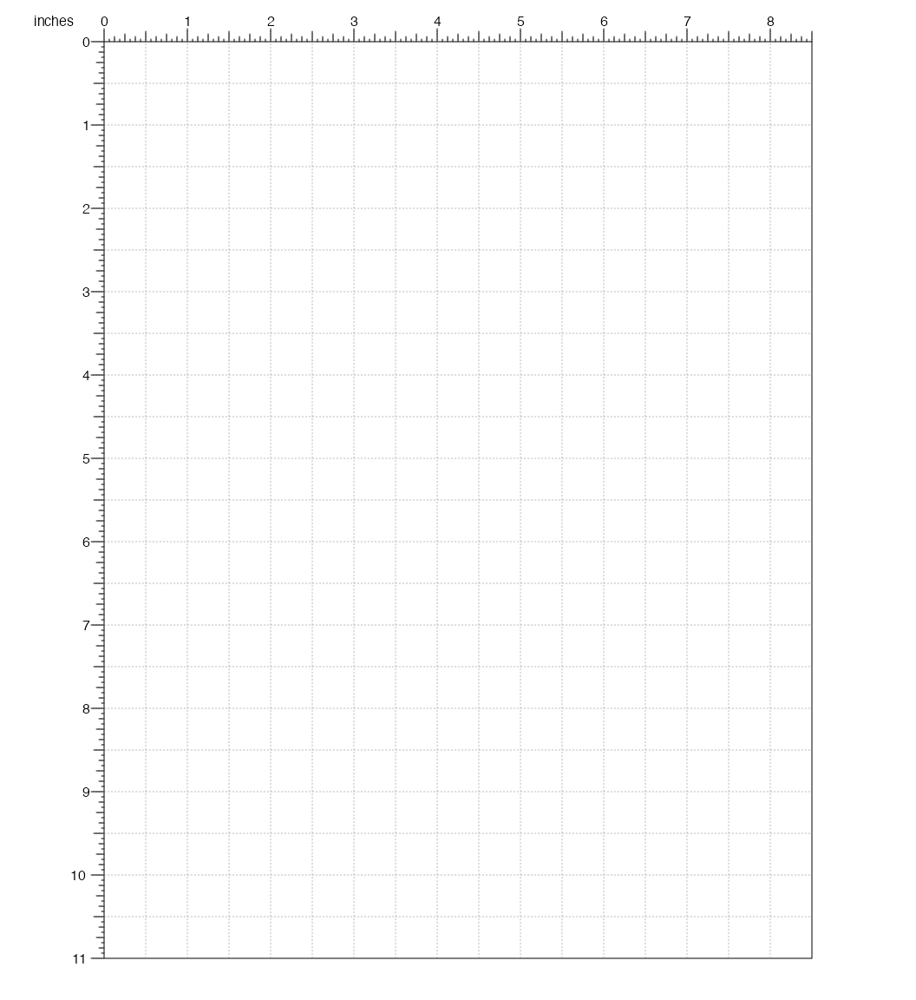
Or we could create a smaller sized page in a different set of units with different gridlines:
bb_pageCreate(width = 8, height = 8, xgrid = 1, ygrid = 1, default.units = "cm")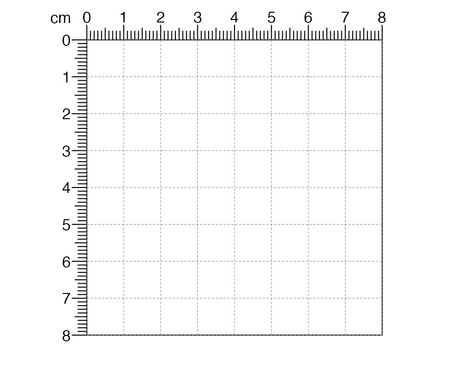
We could turn off gridlines entirely by setting xgrid and ygrid to 0:
bb_pageCreate(width = 3, height = 3, xgrid = 0, ygrid = 0, default.units = "inches")If we want more specific gridlines on our page, we can use the bb_pageGuideHorizontal() and bb_pageGuideVertical() functions:
bb_pageCreate(width = 3, height = 3, default.units = "inches")
## Add a horizontal guide at y = 2.25 inches
bb_pageGuideHorizontal(y = 2.25, default.units = "inches")
## Add a vertical guide at x = 0.75 inches
bb_pageGuideVertical(x = 0.75, default.units = "inches")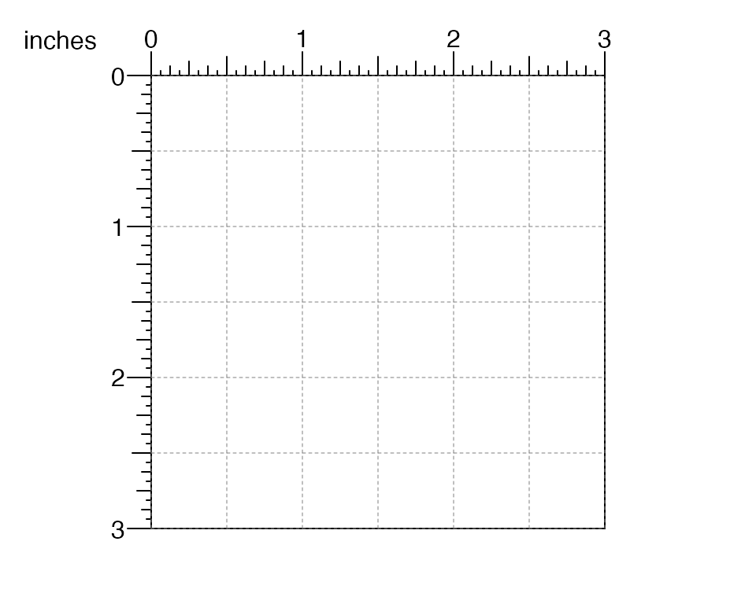
We can also remove all guidelines from the plot once we are finished using guides by using the bb_pageGuideHide() function:
## Create page
bb_pageCreate(width = 3, height = 3, default.units = "inches")
## Remove guides
bb_pageGuideHide()
Coordinate systems and units
BentoBox is compatible with numerous coordinate systems, which are flexible enough to be used in combination. Brief descriptions of the most commonly used BentoBox coordinate systems are as follows:
| Coordinate System | Description |
|---|---|
| “npc” | Normalized Parent Coordinates. Treats the bottom-left corner of the plotting region as the location (0,0) and the top-right corner as (1,1). |
| “snpc” | Squared Normalized Parent Coordiantes. Placements and sizes are expressed as a proportion of the smaller of the width and height of the plotting region. |
| “native” | Placements and sizes are relative to the x- and y-scales of the plotting region. |
| “inches” | Placements and sizes are in terms of physical inches. |
| “cm” | Placements and sizes are in terms of physical centimeters. |
| “mm” | Placements and sizes are in terms of physical millimeters. |
| “points” | Placements and sizes are in terms of physical points. There are 72.27 points per inch. |
We can set the bb_page in one coordinate system, but then place and arrange our plots using other coordinate systems. For example, we can set our page as 3 x 3 inches:
bb_pageCreate(width = 3, height = 3, default.units = "inches")
But we can then switch to npc coordinates to plot something in the center of the page at (0.5, 0.5) npc. The unit() function allows us to easily specify x, y, width, and height in combinations of different units in one plotting function call.
bb_plotRect(x = unit(0.5, "npc"), y = unit(0.5, "npc"), width = 1, height = 1, default.units = "inches")
The native coordinate system is particularly useful for annotation functions that can plot relative to the genomic scales of a plot. For example, we can use bb_annoText() to annotate some text at a specific genomic location in a plot:
bb_pageCreate(width = 5, height = 1.5, default.units = "inches",
showGuides = FALSE, xgrid = 0, ygrid = 0)
data("bb_imrH3K27acData")
signalPlot <- bb_plotSignal(data = bb_imrH3K27acData,
chrom = "chr21", chromstart = 28000000, chromend = 30300000,
x = 0.5, y = 0.25, width = 4, height = 0.75, default.units = "inches")
bb_annoGenomeLabel(plot = signalPlot, x = 0.5, y = 1.01)
## Annotate text at average x-coordinate of data peak
peakScore <- bb_imrH3K27acData[which(bb_imrH3K27acData$score == max(bb_imrH3K27acData$score)),]
peakPos <- round((min(peakScore$start) + max(peakScore$end))*0.5)
bb_annoText(plot = signalPlot, label = format(peakPos, big.mark = ","), fontsize = 8,
x = unit(peakPos, "native"), y = unit(1, "npc"),
just = "bottom")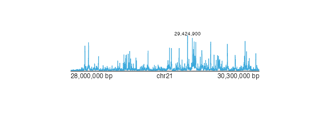
Working with plot objects
In BentoBox all plot objects are boxes, with user-defined positions and sizes. All plot objects can be placed on a bb_page using the placement arguments (e.g. x, y, width, height, just, default.units, …). The bb_page sets the origin of the plot at the top left corner of the page. By default, the x and y arguments place the top-left corner of a plot in the specified position on the bb_page while the width and height arguments define the size of the plot.
For example, if users want the top-left corner of their plot to be 0.5 inches down from the top of the page and 0.5 inches from the left…

and the plot to be 2 inches wide and 1 inch tall…
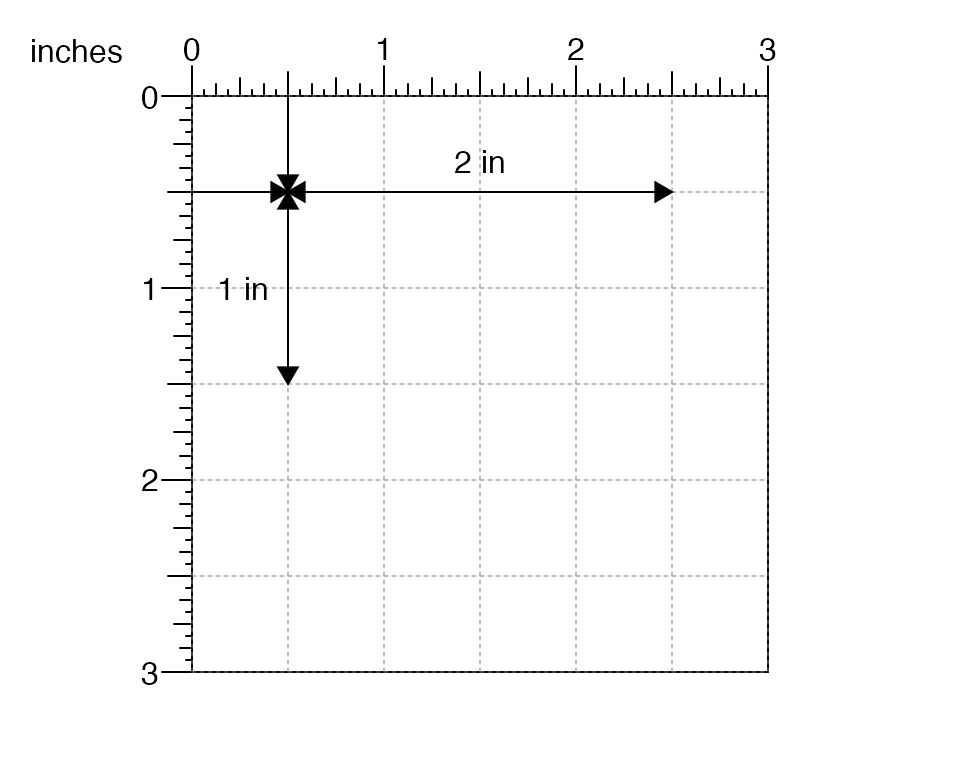
BentoBox can make the plot with these exact dimensions:
## Create page
bb_pageCreate(width = 3, height = 3, default.units = "inches")
## Plot rectangle
bb_plotRect(x = 0.5, y = 0.5, width = 2, height = 1,
just = c("left", "top"), default.units = "inches")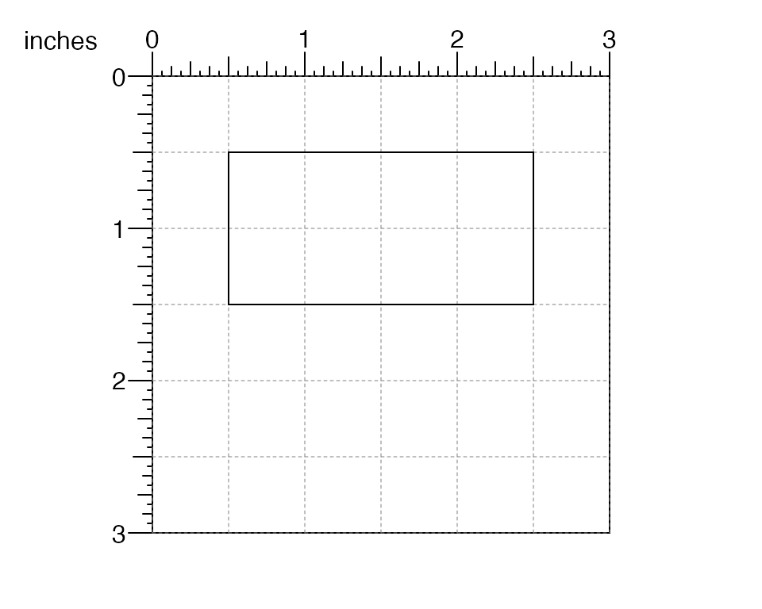
BentoBox also provides the helper function bb_pagePlotPlace() for placing plot objects that have been previously defined:
## Load data
data("bb_imrH3K27acData")
## Create page
bb_pageCreate(width = 3, height = 3, default.units = "inches")
## Define signal plot
signalPlot <- bb_plotSignal(data = bb_imrH3K27acData,
chrom = "chr21", chromstart = 28000000, chromend = 30300000,
draw = FALSE)
## Place plot on bb_page
bb_pagePlotPlace(plot = signalPlot,
x = 0.5, y = 0.5, width = 2, height = 1,
just = c("left", "top"), default.units = "inches")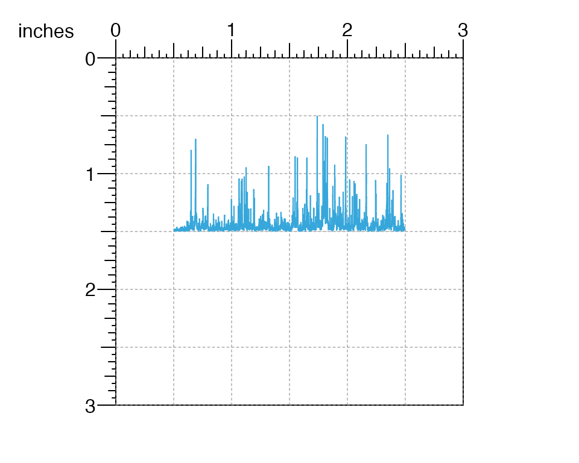
and bb_pagePlotRemove() for removing plots from a page:
## Load data
data("bb_imrH3K27acData")
## Create page
bb_pageCreate(width = 3, height = 3, default.units = "inches")
## Plot and place signal plot
signalPlot <- bb_plotSignal(data = bb_imrH3K27acData,
chrom = "chr21", chromstart = 28000000, chromend = 30300000,
x = 0.5, y = 0.5, width = 2, height = 1,
just = c("left", "top"), default.units = "inches")
## Remove signal plot
bb_pagePlotRemove(plot = signalPlot)
These functions give the users additional flexibility in how they create their R scripts and BentoBox layouts.
Using the just parameter
While the x, y, width, and height parameters are relative to the top-left corner of the plot by default, the just parameter provides additional flexibility by allowing users to change the placement reference point. The just parameter accepts a character or numeric vector of length 2 describing the horizontal and vertical justification (or reference point), respectively.
The just parameter can be set using character strings "left", "right", "center", "bottom" and "top":

Or it can be set using numeric values where 0 means left/bottom, 1 means right/top, and 0.5 means center:
This is particularly useful when an object needs to be aligned in reference to another plot object or page marker. For example, in the Hi-C plot below we might want to align the top-right corner of the heatmap legend to the 3-inch mark. There is no need to calculate the top-left position (i.e. 3 inches - (legend width)) to determine where to place the heatmap legend. Instead we can change the just parameter to just=c('right', 'top'):
## Load example Hi-C data
data("bb_imrHicData")
## Create a BentoBox page
bb_pageCreate(width = 3.25, height = 3.25, default.units = "inches")
## Plot Hi-C data with placing information
hicPlot <- bb_plotHicSquare(data = bb_imrHicData,
chrom = "chr21", chromstart = 28000000, chromend = 30300000,
x = 0.25, y = 0.25, width = 2.5, height = 2.5, default.units = "inches")
## Add color scale annotation with just = c("right", "top")
bb_annoHeatmapLegend(plot = hicPlot,
x = 3, y = 0.25, width = 0.1, height = 1.25,
just = c("right", "top"), default.units = "inches")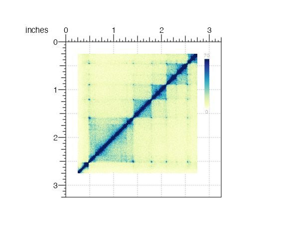
Plotting multi-omic data
BentoBox makes it easy to create reproducible, publication-quality figures from multi-omic data. Since each plot can be placed in exactly the desired location, users can stack multiple types of genomic data so that their axes and data are correctly aligned. In this section we will show some examples of plotting multi-omic data and how the bb_params object and “below” y-coordinate can facilitate this process.
In the following example, we plot the same genomic region (i.e. chr21:28000000-30300000) represented in Hi-C data, loop annotations, signal track data, GWAS data, all along a common gene track and genome label axis:
## Load example data
data("bb_imrHicData")
data("bb_bedpeData")
data("bb_imrH3K27acData")
data("bb_gwasData")
## Create a BentoBox page
bb_pageCreate(width = 3, height = 5, default.units = "inches",
showGuides = FALSE, xgrid = 0, ygrid = 0)
## Plot Hi-C data in region
bb_plotHicSquare(data = bb_imrHicData,
chrom = "chr21", chromstart = 28000000, chromend = 30300000,
x = 0.5, y = 0.5, width = 2, height = 2,
just = c("left", "top"), default.units = "inches")
## Plot loop annotations
bb_plotBedpeArches(data = bb_bedpeData,
chrom = "chr21", chromstart = 28000000, chromend = 30300000,
x = 0.5, y = 2.5, width = 2, height = 0.25,
just = c("left", "top"), default.units = "inches",
fill = "black", linecolor = "black", flip = TRUE)
## Plot signal track data
bb_plotSignal(data = bb_imrH3K27acData,
chrom = "chr21", chromstart = 28000000, chromend = 30300000,
x = 0.5, y = 2.75, width = 2, height = 0.5,
just = c("left", "top"), default.units = "inches")
## Plot GWAS data
bb_plotManhattan(data = bb_gwasData,
chrom = "chr21", chromstart = 28000000, chromend = 30300000,
ymax = 1.1, cex = 0.20,
x = 0.5, y = 3.5, width = 2, height = 0.5,
just = c("left", "top"), default.units = "inches")
## Plot gene track
library(TxDb.Hsapiens.UCSC.hg19.knownGene)
library(org.Hs.eg.db)
bb_plotGenes(chrom = "chr21", chromstart = 28000000, chromend = 30300000,
x = 0.5, y = 4, width = 2, height = 0.5,
just = c("left", "top"), default.units = "inches")
## Plot genome label
bb_plotGenomeLabel(chrom = "chr21", chromstart = 28000000, chromend = 30300000,
x = 0.5, y = 4.5, length = 2, scale = "Mb",
just = c("left", "top"), default.units = "inches")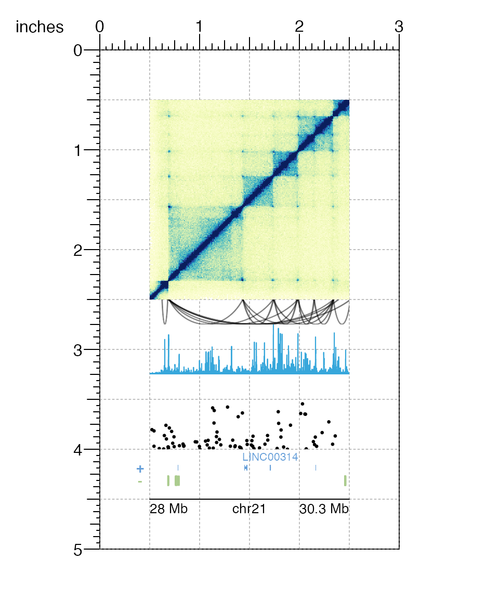
Using the bb_params object
The bb_params() function creates a bb_params object that can contain any argument from BentoBox functions.
We can recreate and simplify the multi-omic plot above by saving the genomic region, left-based x-coordinate, and width into a bb_params object:
params <- bb_params(chrom = "chr21", chromstart = 28000000, chromend = 30300000,
x = 0.5, just = c("left", "top"),
width = 2, length = 2, default.units = "inches")Since these values are the same for each of the functions we are using to build our multi-omic figure, we can now pass the bb_params object into our functions so we don’t need to write the same parameters over and over again:
## Load example data
data("bb_imrHicData")
data("bb_bedpeData")
data("bb_imrH3K27acData")
data("bb_gwasData")
## Create a BentoBox page
bb_pageCreate(width = 3, height = 5, default.units = "inches",
showGuides = FALSE, xgrid = 0, ygrid = 0)
## Plot Hi-C data in region
bb_plotHicSquare(data = bb_imrHicData,
params = params,
y = 0.5, height = 2)
## Plot loop annotations
bb_plotBedpeArches(data = bb_bedpeData,
params = params,
y = 2.5, height = 0.25,
fill = "black", linecolor = "black", flip = TRUE)
## Plot signal track data
bb_plotSignal(data = bb_imrH3K27acData,
params = params,
y = 2.75, height = 0.5)
## Plot GWAS data
bb_plotManhattan(data = bb_gwasData,
params = params,
ymax = 1.1, cex = 0.20,
y = 3.5, height = 0.5)
## Plot gene track
library(TxDb.Hsapiens.UCSC.hg19.knownGene)
library(org.Hs.eg.db)
bb_plotGenes(params = params,
y = 4, height = 0.5)
## Plot genome label
bb_plotGenomeLabel(params = params,
y = 4.5, scale = "Mb")
The bb_params object also simplifies the code for making complex multi-omic figures when we want to change the genomic region of our plots. If we want to change the region for the figure above, we can simply put it into the bb_params object and re-run the code to generate the figure:
params <- bb_params(chrom = "chr21", chromstart = 29000000, chromend = 30000000,
x = 0.5, just = c("left", "top"),
width = 2, length = 2, default.units = "inches")
Alternatively, if we want to plot around a particular gene rather than a genomic region we can use bb_params() to specify gene and geneBuffer. If geneBuffer is not included, the default buffer adds (gene length) / 2 base pairs to the ends of the gene coordinates.
params <- bb_params(gene = "LINC00113", geneBuffer = 100000, assembly = "hg19",
x = 0.5, just = c("left", "top"),
width = 2, length = 2, default.units = "inches")
The “below” y-coordinate
Since multi-omic plots often involve vertical stacking, the placement of multi-omic plots can be facilitated with the “below” y-coordinate. Rather than providing a numeric value or unit object to the y parameter in plotting functions, we can place a plot below the previously drawn BentoBox plot with a character value consisting of the distance below the last plot, in page units, and “b”. For example, on a page made in inches, y = "0.1b" will place a plot 0.1 inches below the last drawn plot.
We can further simplify the placement code of our multi-omic figure above by using the “below” y-coordinate to easily stack our plots:
## Load example data
data("bb_imrHicData")
data("bb_bedpeData")
data("bb_imrH3K27acData")
data("bb_gwasData")
## bb_params
params <- bb_params(chrom = "chr21", chromstart = 28000000, chromend = 30300000,
x = 0.5, just = c("left", "top"),
width = 2, length = 2, default.units = "inches")
## Create a BentoBox page
bb_pageCreate(width = 3, height = 5, default.units = "inches",
showGuides = FALSE, xgrid = 0, ygrid = 0)
## Plot Hi-C data in region
bb_plotHicSquare(data = bb_imrHicData,
params = params,
y = 0.5, height = 2)
## Plot loop annotations
bb_plotBedpeArches(data = bb_bedpeData,
params = params,
y = "0b",
height = 0.25,
fill = "black", linecolor = "black", flip = TRUE)
## Plot signal track data
bb_plotSignal(data = bb_imrH3K27acData,
params = params,
y = "0b",
height = 0.5)
## Plot GWAS data
bb_plotManhattan(data = bb_gwasData,
params = params,
ymax = 1.1, cex = 0.20,
y = "0.25b",
height = 0.5)
## Plot gene track
library(TxDb.Hsapiens.UCSC.hg19.knownGene)
library(org.Hs.eg.db)
bb_plotGenes(params = params,
y = "0b",
height = 0.5)
## Plot genome label
bb_plotGenomeLabel(params = params,
y = "0b",
scale = "Mb")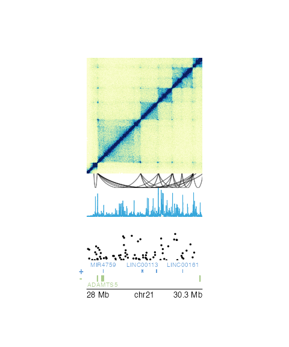
Additional plot types and elements
Beyond providing functions for plotting and arranging various genomic datasets, BentoBox also gives users the functionality to plot other elements within a BentoBox page layout:
Ideograms
In addition to a genomic axis label, it can also be useful to include an ideogram representation of a chromosome to give a broader context of the location of genomic data. UCSC Giemsa stain cytoband information for various genomic assemblies is included with BentoBox and must be loaded before plotting an ideogram (i.e.data("cytoBand.Hsapiens.UCSC.hg19")).
Ideograms can be plotted both vertically and horizontally:
## Load cytoband data
data("cytoBand.Hsapiens.UCSC.hg19")
library(TxDb.Hsapiens.UCSC.hg19.knownGene)
library(GenomeInfoDb)
## Get sizes of chromosomes to scale their sizes
tx_db <- TxDb.Hsapiens.UCSC.hg19.knownGene
chromSizes <- GenomeInfoDb::seqlengths(tx_db)
maxChromSize <- max(chromSizes)
bb_pageCreate(width = 8, height = 4.25, default.units = "inches",
showGuides = FALSE, xgrid = 0, ygrid = 0)
xCoord <- 0.15
for (chr in c(paste0("chr", seq(1, 22)), "chrX")){
height <- (4*chromSizes[[chr]])/maxChromSize
bb_plotIdeogram(chrom = chr, assembly = "hg19",
orientation = "v",
x = xCoord, y = 4,
width = 0.2, height = height,
just = "bottom")
bb_plotText(label = gsub("chr", "", chr),
x = xCoord, y = 4.1, fontsize = 10)
xCoord <- xCoord + 0.35
}
bb_pageCreate(width = 6.25, height = 0.5, default.units = "inches",
showGuides = FALSE, xgrid = 0, ygrid = 0)
bb_plotIdeogram(chrom = "chr1", assembly = "hg19",
orientation = "h",
x = 0.25, y = unit(0.25, "npc"), width = 5.75, height = 0.3)The cytobands can also be hidden if a more minimal ideogram is preferred:
bb_plotIdeogram(showBands = FALSE,
chrom = "chr1", assembly = "hg19",
orientation = "h",
x = 0.25, y = unit(0.25, "npc"), width = 5.75, height = 0.3)
To highlight a specific genomic region on an ideogram, see the section Genomic region highlights and zooms.
Incorporating ggplots
In addition to its numerous genomic functions, BentoBox can size and place ggplots within a BentoBox layout. Rather than arranging ggplots in a relative manner, BentoBox can make and place ggplots in absolute sizes and locations. This makes it simple and intuitive to make complex ggplot arrangements beyond a basic grid-style layout.
For example, let’s say we wanted to make a complex multi-panel ggplot about COVID-19 data consisting of the following plots:
- A United States map
library(ggplot2)
library(scales)
data("bb_CasesUSA")
US_map <- ggplot(bb_CasesUSA, aes(long, lat, group = group)) +
theme_void() +
geom_polygon(aes(fill = cases_100K), color = "white")+
scale_fill_distiller(palette = "YlGnBu", direction = 1,
labels = label_number(suffix = "", scale = 1e-3, accuracy = 1)) +
theme(legend.position = "left",
legend.justification = c(0.5, 0.95),
legend.title = element_blank(),
legend.text = element_text(size = 7),
legend.key.width = unit(0.3, "cm"),
legend.key.height = unit(0.4, "cm"),
plot.title = element_text(hjust = 0, vjust = -1),
plot.title.position = "plot")+
labs(title = "Thousands of COVID-19 Cases per 100,000 People") +
coord_fixed(1.3)
print(US_map)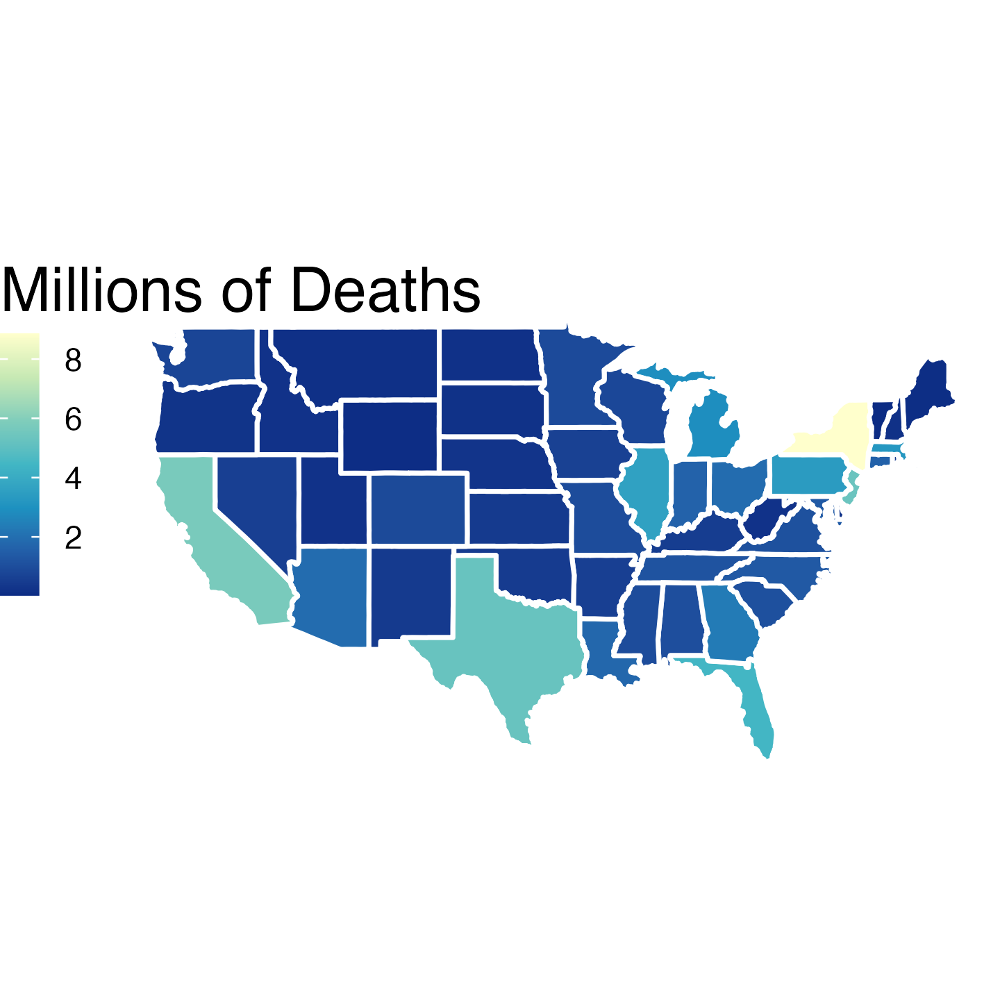
- Timeline line plots:
data("bb_CasesNYFL")
# Format y-labels
ylabels <- seq(0, 2000000, by = 500000)/1e6
ylabels[c(1,3,5)] <- round(ylabels[c(1,3,5)], digits = 0)
ylabels[c(2,4)] <- round(ylabels[c(2,4)], digits = 1)
ylabels[5] <- paste0(ylabels[5], "M cases")
cases_NYline <- ggplot(bb_CasesNYFL[bb_CasesNYFL$state == "new york",],
aes(x = date, y = cumsum(caseIncrease))) +
geom_line(size = 0.3) +
scale_x_date(labels = date_format("%b '%y"),
breaks = as.Date(c("2020-05-01", "2020-09-01", "2021-01-01")),
limits = as.Date(c("2020-01-29", "2021-03-07"))) +
scale_y_continuous(labels = ylabels, position = "right") +
coord_cartesian(ylim = c(0, 2000000)) +
theme(panel.background = element_rect(fill = "transparent", color = NA),
plot.background = element_rect(fill = "transparent", color = NA),
axis.line.x.bottom = element_line(size = 0.1, color = "grey"),
axis.line.y = element_line(size = 0.1, color = "grey"),
axis.text.x = element_text(size = 5, hjust = -0.1, vjust = 3, color = "black"),
axis.title.x = element_blank(),
axis.ticks.x = element_line(color = "grey"),
axis.title.y = element_blank(),
axis.text.y = element_text(size = 7),
axis.ticks.y = element_blank(),
axis.ticks.length.x.bottom = unit(-0.15, "cm"),
plot.title = element_text(size = 8, hjust = 1),
plot.title.position = "plot")
print(cases_NYline)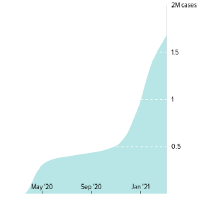
cases_FLline <- ggplot(bb_CasesNYFL[bb_CasesNYFL$state == "florida",],
aes(x = date, y = cumsum(caseIncrease))) +
geom_line(size = 0.3) +
scale_x_date(labels = date_format("%b '%y"),
breaks = as.Date(c("2020-05-01", "2020-09-01", "2021-01-01")),
limits = as.Date(c("2020-01-29", "2021-03-07"))) +
scale_y_continuous(labels = ylabels, position = "right") +
coord_cartesian(ylim = c(0, 2000000)) +
theme(panel.background = element_rect(fill = "transparent", color = NA),
plot.background = element_rect(fill = "transparent", color = NA),
axis.line.x.bottom = element_line(size = 0.1, color = "grey"),
axis.line.y = element_line(size = 0.1, color = "grey"),
axis.title = element_blank(),
axis.text.y = element_text(size = 7),
axis.text.x = element_text(size = 5, hjust = -0.1, vjust = 3, color = "black"),
axis.ticks = element_line(color = "grey"),
axis.ticks.y = element_blank(),
axis.ticks.length.x.bottom = unit(-0.15, "cm"),
plot.title = element_text(size = 8, hjust = 1),
plot.title.position = "plot")
print(cases_FLline)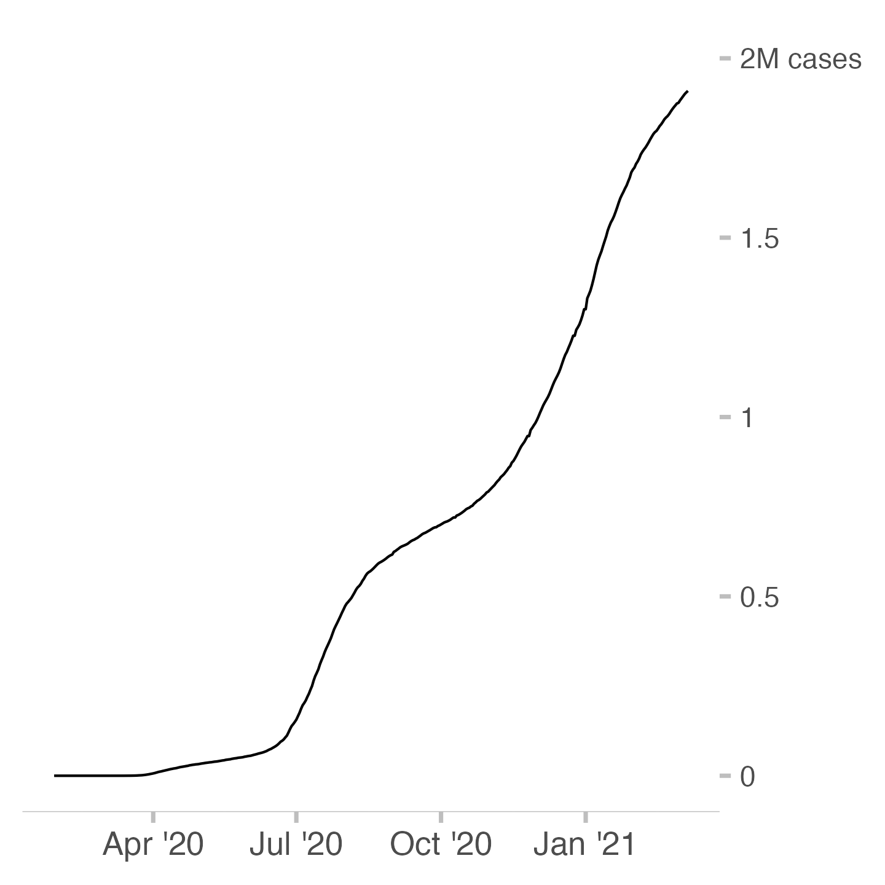
- Pie charts:
data("bb_VaccinesNYFL")
vaccines_NYpie <- ggplot(bb_VaccinesNYFL[bb_VaccinesNYFL$state == "new york",],
aes(x = "", y = value, fill = vax_group)) +
geom_bar(width = 1, stat = "identity") +
theme_void() +
scale_fill_manual(values = c("#3a6dab", "light grey","#85a9d5")) +
coord_polar(theta = "y", start = 2.125) +
geom_text(aes(x = 1.1, label= paste0(percent, "%")),
color = c("white", "white", "black"),
size = 1.75,
position = position_stack(vjust = 0.5)) +
annotate(geom = "text",
x = c(1.9, 1.95, 2.4),
y = c(8.5e6, 9e5, 1.6e7),
label = c("not", "partially", paste("fully", "vaccinated", sep ="\n")),
size = 2.25) +
theme(legend.position = "none",
plot.title = element_text(hjust = 0.5, vjust = -6.5, size = 13)) +
labs(title = "New York")
print(vaccines_NYpie)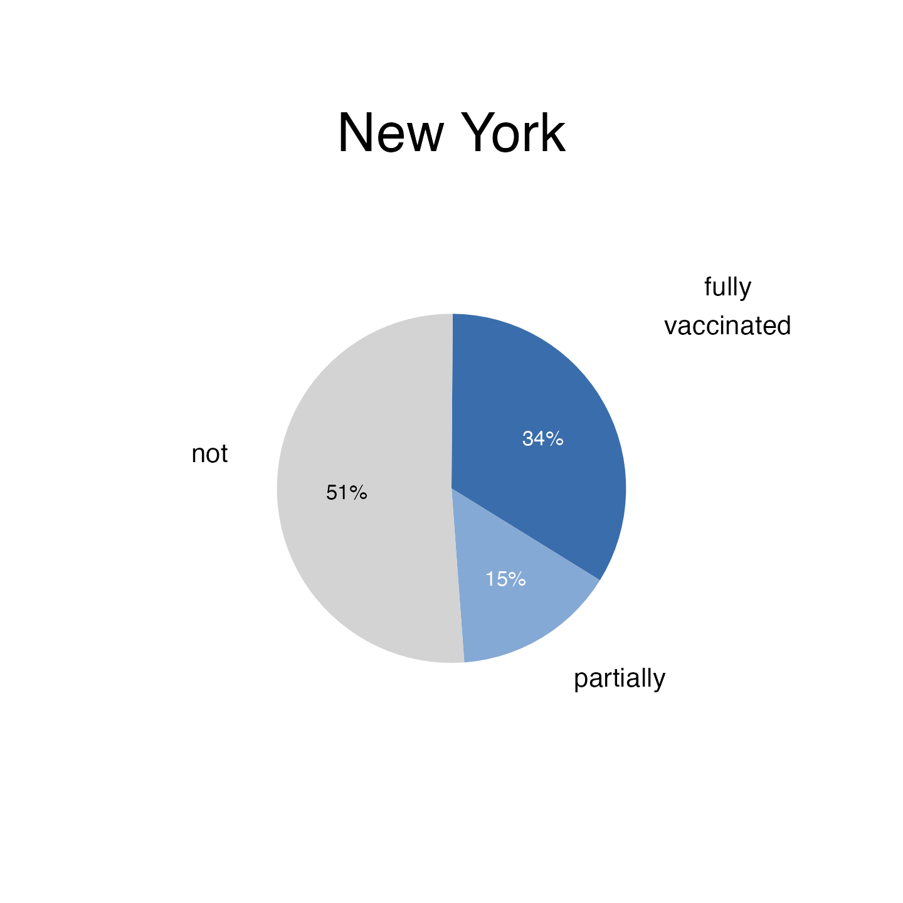
vaccines_FLpie <- ggplot(bb_VaccinesNYFL[bb_VaccinesNYFL$state == "florida",],
aes(x = "", y = value, fill = vax_group)) +
geom_bar(width = 1, stat = "identity") +
scale_fill_manual(values = c("#3a6dab", "light grey","#85a9d5")) +
theme_void() +
coord_polar(theta = "y", start = pi/1.78) +
geom_text(aes(x = 1.1, label=paste0(percent, "%")),
color = c("white", "white", "black"),
size = 1.75,
position = position_stack(vjust = 0.5)) +
annotate(geom = "text",
x = c(1.9, 2.05, 2.4),
y = c(1.05e7, 9.25e5, 1.865e7),
label = c("not", "partially", paste("fully", "vaccinated", sep ="\n")),
size = 2.25) +
theme(legend.position = "none",
plot.title = element_text(hjust = 0.5, vjust = -7, size = 13)) +
labs(title = "Florida")
print(vaccines_FLpie)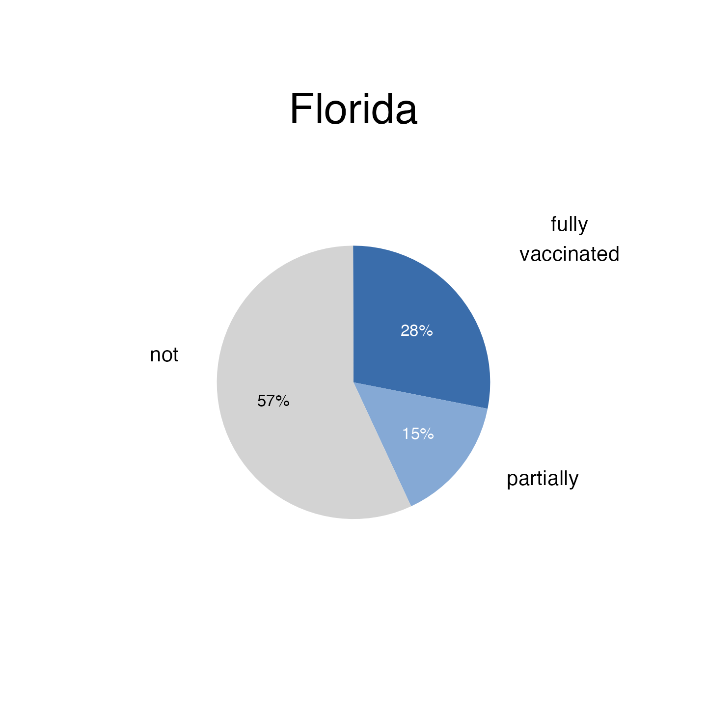
We can now easily overlap and size all these ggplots by passing our saved plot objects into bb_plotGG():
bb_pageCreate(width = 9.5, height = 3.5, default.units = "inches")
bb_plotGG(plot = US_map,
x = 0.1,y = 0,
width = 6.5, height = 3.5, just = c("left", "top"))
bb_plotGG(plot = cases_NYline,
x = 6.3, y = 1.8,
width = 2.9, height = 1.7, just = c("left", "bottom"))
bb_plotGG(plot = cases_FLline,
x = 6.3, y = 3.5,
width = 2.9, height = 1.7, just = c("left", "bottom"))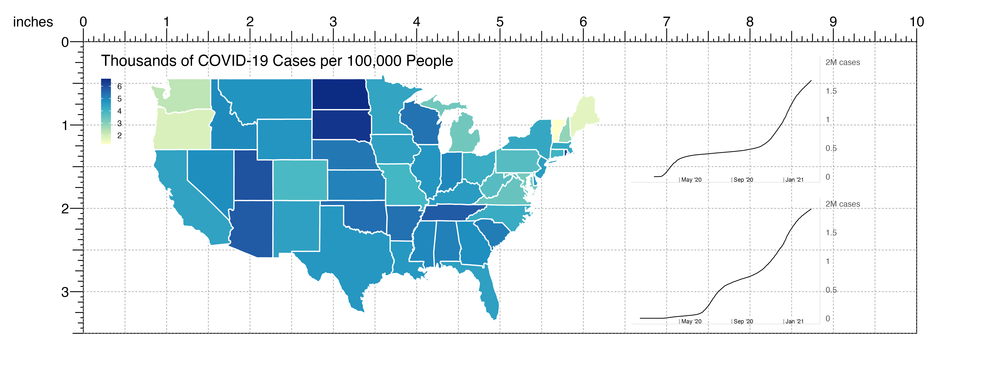
In particular, BentoBox makes it easy to resize and place our pie charts in a layout that overlaps our line plots without it affecting the sizing of the other plots on the page:
bb_plotGG(plot = vaccines_NYpie,
x = 6.2, y = -0.2,
width = 1.8, height = 1.8, just = c("left", "top"))
bb_plotGG(plot = vaccines_FLpie,
x = 6.2, y = 1.5,
width = 1.8, height = 1.8, just = c("left", "top"))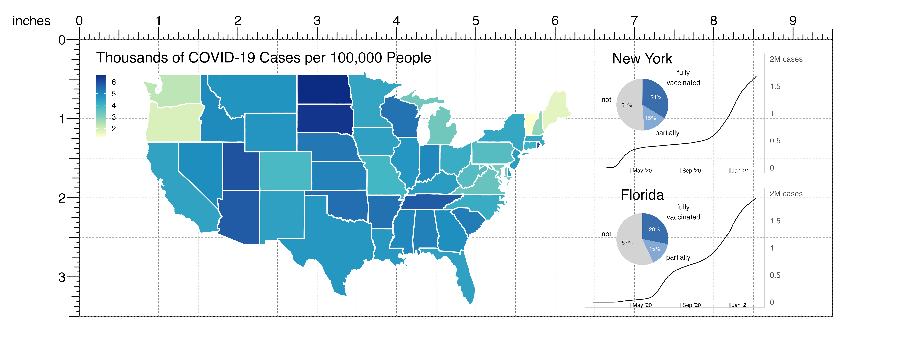
We are then left with a complex, elegant arrangement of ggplots as if we had arranged them together with graphic design software:
Basic shapes
It is also possible to plot basic shapes and images to further enhance a BentoBox layout. These functions include bb_plotCircle(), bb_plotPolygon(), bb_plotRaster(), bb_plotRect(), bb_plotSegments(), and bb_plotText().
For example, perhaps we want to create a presentation slide detailing an experimental workflow. Not only can we add BentoBox plots based on genomic data:
data("bb_imrH3K27acData")
data("bb_imrHicData")
bb_pageCreate(width = 8, height = 4.5, default.units = "inches")
bb_plotSignal(data = bb_imrH3K27acData,
chrom = "chr21", chromstart = 28000000, chromend = 30300000,
x = 0.25, y = 2, width = 2.25, height = 1,
just = c("left", "top"), default.units = "inches")
bb_plotHicSquare(data = bb_imrHicData,
chrom = "chr21", chromstart = 28000000, chromend = 30300000,
x = 3.25, y = 1.5, width = 2, height = 2,
just = c("left", "top"), default.units = "inches")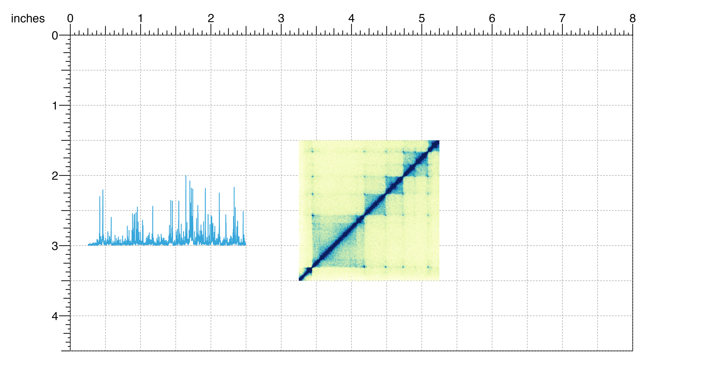
But we can also add some text labels for the title of our slide and the the steps of our workflow:
bb_plotText(label = "EXPERIMENTAL WORKFLOW", fontsize = 24, fontface = "bold",
x = 0.25, y = 0.5, just = "left")
bb_plotText(label = "H3K27ac", fontsize = 16,
x = 1.375, y = 4, just = "center", default.units = "inches")
bb_plotText(label = "Hi-C", fontsize = 16,
x = 4.25, y = 4, just = "center", default.units = "inches")
bb_plotText(label = "Analysis", fontsize = 16,
x = 6.875, y = 4, just = "center", default.units = "inches")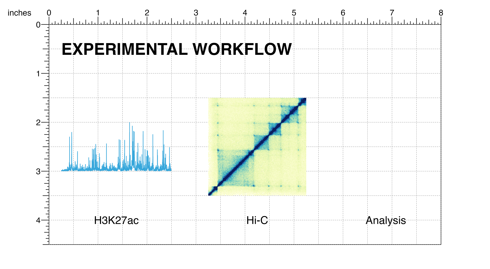
Add an image:
library(png)
rlogo <- readPNG(system.file("images", "Rlogo.png", package = "BentoBox"))
bb_plotRaster(image = rlogo,
x = 6, y = 2.5, width = 1.75, height = 1.55,
just = "left")And add line segments with arrows to our workflow:
bb_plotSegments(x0 = 2.7, y0 = 2.5, x1 = 3.1, y1 = 2.5,
linecolor = "grey", fill = "grey",
arrow = arrow(angle = 30,
length = unit(0.1, "inches"),
ends = "last",
type = "closed"),
default.units = "inches")
bb_plotSegments(x0 = 5.45, y0 = 2.5, x1 = 5.85, y1 = 2.5,
linecolor = "grey", fill = "grey",
arrow = arrow(angle = 30,
length = unit(0.1, "inches"),
ends = "last",
type = "closed"),
default.units = "inches")
This makes our final BentoBox plot a combination of genomic data and other helpful figure elements:
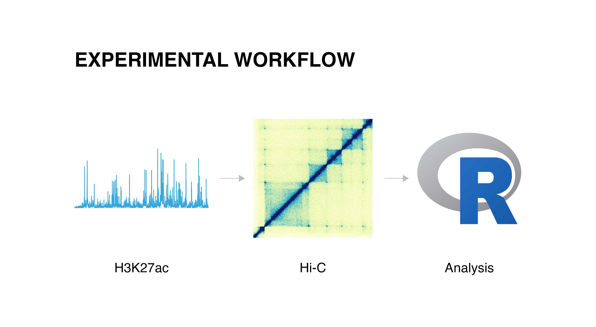
For more detailed usage of basic shape functions, see the function-specific reference examples with ?function() (e.g. ?bb_plotCircle()).
Plot annotations
BentoBox is modular and separates plotting and annotating into two different categories of functions. To specify which plot to annotate within an annotation function, each annotation function has a plot parameter that accepts BentoBox plot objects. This will facilitate in inheriting genomic region and plot location information. In this section we will go through some of the major types of annotations used to create accurate and informative BentoBox plots.
Genome labels
Genome labels are some of the most important annotations for giving context to the genomic region of data. bb_annoGenomeLabel()can add genome labels with various customizations.
Genome labels can be shown at three different basepair scales (Mb, Kb, and bp) depending on the size of the region and the desired accuracy of the start and end labels. In the genomic region chr21:28000000-30300000 we can use a Mb scale:
data("bb_imrHicData")
bb_pageCreate(width = 3, height = 3.25, default.units = "inches",
showGuides = FALSE, xgrid = 0, ygrid = 0)
hicPlot <- bb_plotHicSquare(data = bb_imrHicData,
chrom = "chr21", chromstart = 28000000, chromend = 30300000,
x = 0.25, y = 0.25, width = 2.5, height = 2.5, default.units = "inches")
bb_annoGenomeLabel(plot = hicPlot, scale = "Mb",
x = 0.25, y = 2.76)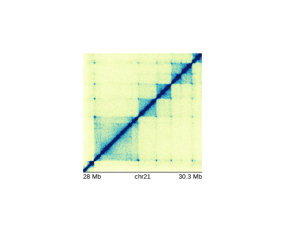
If we use a more specific genomic region like chr21:28255554-29354665, the Mb scale will be rounded and indicated with an approximation sign:
#> Warning: Start label is rounded.
#> Warning: End label is rounded.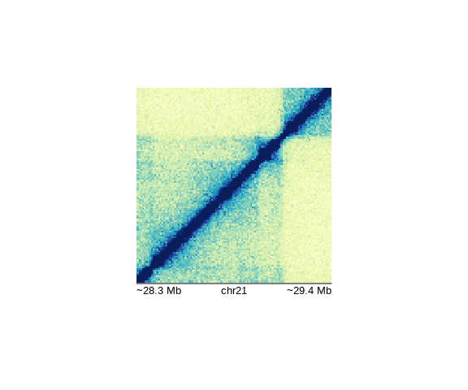
Thus, it makes more sense to use the bp scale for ultimate accuracy:
data("bb_imrHicData")
bb_pageCreate(width = 3, height = 3.25, default.units = "inches",
showGuides = FALSE, xgrid = 0, ygrid = 0)
hicPlot <- bb_plotHicSquare(data = bb_imrHicData,
chrom = "chr21", chromstart = 28255554, chromend = 29354665,
x = 0.25, y = 0.25, width = 2.5, height = 2.5, default.units = "inches")
bb_annoGenomeLabel(plot = hicPlot, scale = "bp",
x = 0.25, y = 2.76)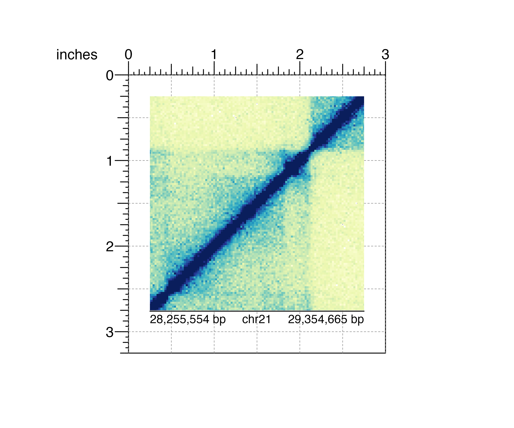
If our genomic region is small enough, bb_annoGenomeLabel() can also be used to display the nucleotide sequence of that region. Similar to IGV, bb_annoGenomeLabel() will first represent nucleotides as colored boxes:

At even finer scales, bb_annoGenomeLabel() will then represent nucleotides with colored letters:
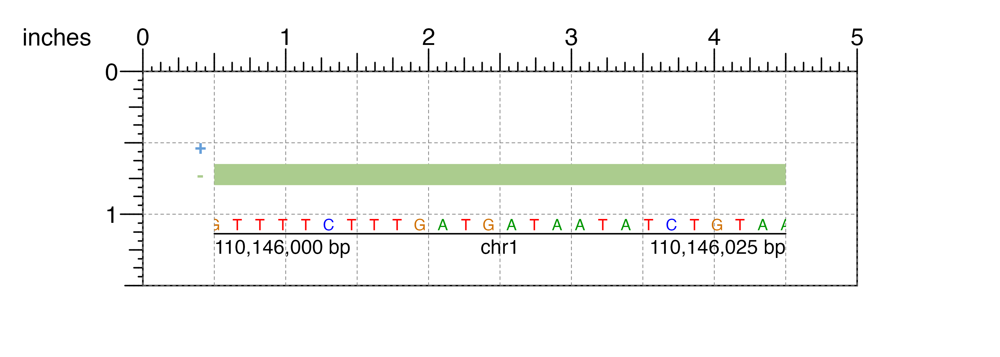
In the specific case of square Hi-C plots (bb_hicSquare objects), bb_annoGenomeLabel() can annotate the genome label along the y-axis:
data("bb_imrHicData")
bb_pageCreate(width = 3.25, height = 3, default.units = "inches",
showGuides = FALSE, xgrid = 0, ygrid = 0)
hicPlot <- bb_plotHicSquare(data = bb_imrHicData,
chrom = "chr21", chromstart = 28000000, chromend = 30300000,
x = 0.5, y = 0.25, width = 2.5, height = 2.5, default.units = "inches")
bb_annoGenomeLabel(plot = hicPlot, scale = "Mb",
axis = "y",
x = 0.5, y = 0.25,
just = c("right", "top"))
Plot axes
In addition to genomic axes, it is also common to annotate standard x and y-axes for measures of scale. This functionality is provided by the bb_annoXaxis() and bb_annoYaxis() functions. For example, a Manhattan plot requires a y-axis to indicate the range of p-values:
library("TxDb.Hsapiens.UCSC.hg19.knownGene")
data("bb_gwasData")
bb_pageCreate(width = 7.5, height = 2.75, default.units = "inches",
showGuides = FALSE, xgrid = 0, ygrid = 0)
manhattanPlot <- bb_plotManhattan(data = bb_gwasData, assembly = "hg19",
fill = c("grey", "#37a7db"),
sigLine = TRUE,
col = "grey", lty = 2, range = c(0, 14),
x = 0.5, y = 0.25, width = 6.5, height = 2,
just = c("left", "top"),
default.units = "inches")
bb_annoGenomeLabel(plot = manhattanPlot, x = 0.5, y = 2.25, fontsize = 8,
just = c("left", "top"), default.units = "inches")
bb_plotText(label = "Chromosome", fontsize = 8,
x = 3.75, y = 2.45, just = "center", default.units = "inches")
## Annotate y-axis
bb_annoYaxis(plot = manhattanPlot, at = c(0, 2, 4, 6, 8, 10, 12, 14),
axisLine = TRUE, fontsize = 8)
## Plot y-axis label
bb_plotText(label = "-log10(p-value)", x = 0.15, y = 1.25, rot = 90,
fontsize = 8, fontface = "bold", just = "center",
default.units = "inches")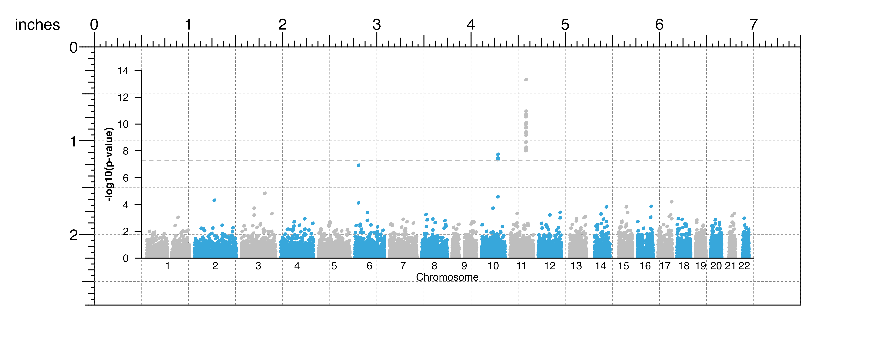
bb_annoXaxis() and bb_annoYaxis() have similar usages and customizations.
Heatmap legends
Heatmap-style plots with numbers translated to a palette of colors require a specific type of legend. This legend can be plotted with bb_annoHeatmapLegend() in both vertical and horizontal orientations. Genomic plots that typically require this annotation are Hi-C plots made with bb_plotHicRectangle(), bb_plotHicSquare(), or bb_plotHicTriangle().
data("bb_imrHicData")
bb_pageCreate(width = 3.25, height = 3.25, default.units = "inches",
showGuides = FALSE, xgrid = 0, ygrid = 0)
params <- bb_params(chrom = "chr21", chromstart = 28000000, chromend = 30300000,
assembly = "hg19",
x = 0.25, width = 2.75, just = c("left", "top"), default.units = "inches")
hicPlot <- bb_plotHicSquare(data = bb_imrHicData, params = params,
zrange = c(0, 70), resolution = 10000,
y = 0.25, height = 2.75)
## Annotate Hi-C heatmap legend
bb_annoHeatmapLegend(plot = hicPlot, fontsize = 7,
orientation = "v",
x = 0.125, y = 0.25,
width = 0.07, height = 0.5, just = c("left", "top"),
default.units = "inches")
bb_annoHeatmapLegend(plot = hicPlot, fontsize = 7,
orientation = "h",
x = 3, y = 3.055,
width = 0.5, height = 0.07, just = c("right", "top"),
default.units = "inches")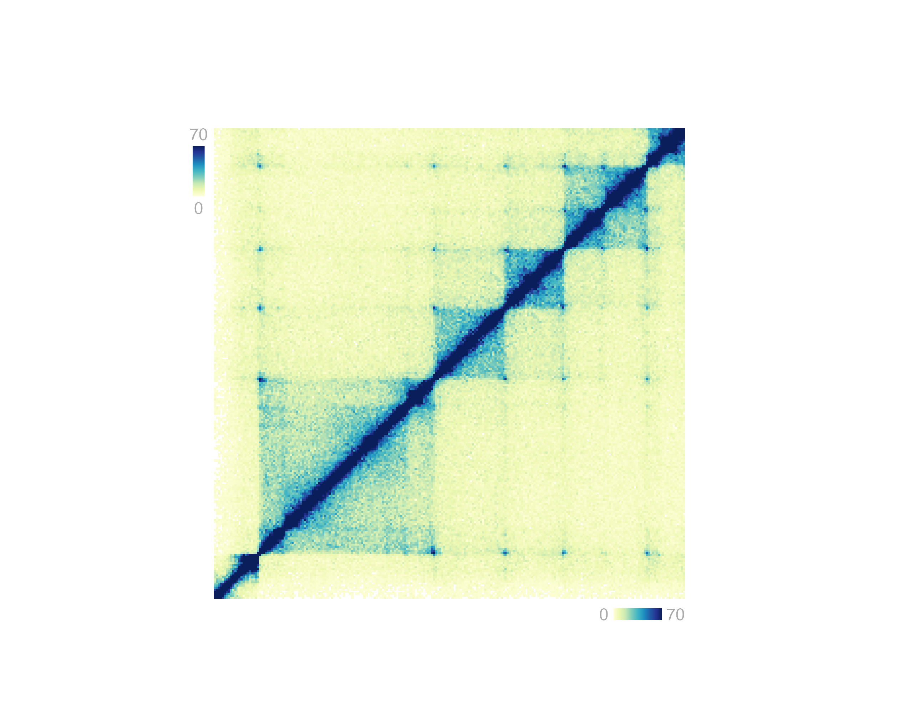
Hi-C pixels
It is also possible to annotate the pixels on a Hi-C plot with provided BEDPE data. Pixels can be annotated with boxes, circles, or squares.
data("bb_imrHicData")
data("bb_bedpeData")
bb_pageCreate(width = 3.25, height = 3.24, default.units = "inches",
showGuides = FALSE, xgrid = 0, ygrid = 0)
hicPlot <- bb_plotHicSquare(data = bb_imrHicData, resolution = 10000, zrange = c(0, 70),
chrom = "chr21", chromstart = 28000000, chromend = 30300000,
x = 0.25, y = 0.25, width = 2.75, height = 2.75,
just = c("left", "top"),
default.units = "inches")
## Annotate pixels
pixels <- bb_annoPixels(plot = hicPlot, data = bb_bedpeData, type = "box",
half = "both")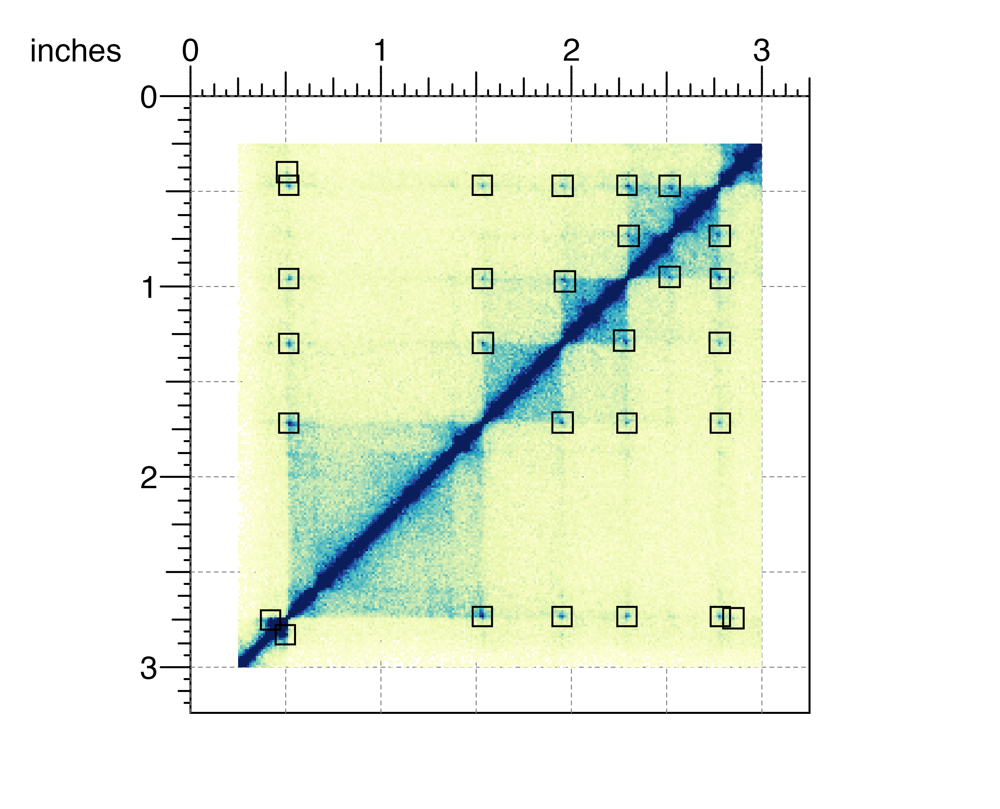
If we want to annotate one pixel of interest, we can subset our BEDPE data and bb_annoPixels() will only annotate the specified pixels:
data("bb_imrHicData")
data("bb_bedpeData")
## Subset BEDPE data
bb_bedpeData <- bb_bedpeData[which(bb_bedpeData$start1 == 28220000 & bb_bedpeData$start2 == 29070000),]
bb_pageCreate(width = 3.25, height = 3.24, default.units = "inches",
showGuides = FALSE, xgrid = 0, ygrid = 0)
hicPlot <- bb_plotHicSquare(data = bb_imrHicData, resolution = 10000, zrange = c(0, 70),
chrom = "chr21", chromstart = 28000000, chromend = 30300000,
x = 0.25, y = 0.25, width = 2.75, height = 2.75,
just = c("left", "top"),
default.units = "inches")
## Annotate pixel
pixels <- bb_annoPixels(plot = hicPlot, data = bb_bedpeData, type = "arrow",
half = "bottom", shift = 12)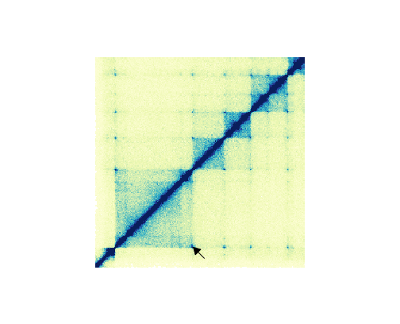
Genomic region highlights and zooms
The last category of annotations that is often used in plotting genomic data is highlighting and zooming. Many figures benefit from providing a broader context of data and then highlighting a smaller genomic region to show data at a finer scale. In this example, we will plot an ideogram and highlight and zoom in on a genomic region of interest to see the signal track data in that region.
First we can plot our ideogram:
data("cytoBand.Hsapiens.UCSC.hg19")
library(TxDb.Hsapiens.UCSC.hg19.knownGene)
bb_pageCreate(width = 6.25, height = 2.25, default.units = "inches",
showGuides = FALSE, xgrid = 0, ygrid = 0)
ideogramPlot <- bb_plotIdeogram(chrom = "chr21", assembly = "hg19",
orientation = "h",
x = 0.25, y = 0.5, width = 5.75, height = 0.3, just = "left")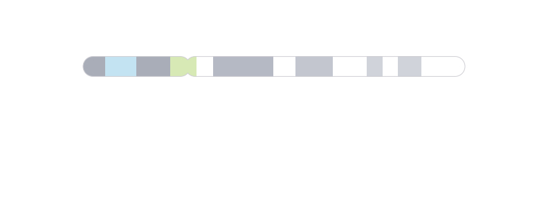
We can then use bb_annoHighlight() to highlight our genomic region of interest (chr21:28000000-30300000) with a box of our desired height:
region <- bb_params(chrom = "chr21", chromstart = 28000000, chromend = 30300000)
bb_annoHighlight(plot = ideogramPlot, params = region,
fill = "red",
y = 0.25, height = 0.5, just = c("left", "top"), default.units = "inches")
To make it clearer that we are zooming in on a genomic region, we can then use bb_annoZoomLines() to add zoom lines from the genomic region we highlighted:
bb_annoZoomLines(plot = ideogramPlot, params = region,
y0 = 0.75, x1 = c(0.25, 6), y1 = 1.25, default.units = "inches")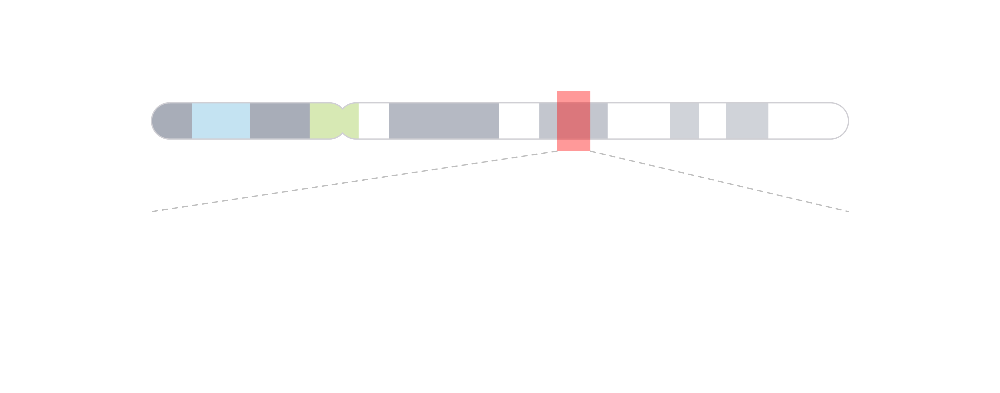
Finally, we can add our zoomed-in signal track data within the zoom lines:

Bioconductor integration
BentoBox is designed to be compatible with typical Bioconductor classes of genomic data to easily integrate genomic data analysis and visualization. In addition to handling various genomic file types and R objects, many BentoBox functions can also handle GRanges objects as input data. Internally, BentoBox utilizes TxDb, OrgDb, and BSgenome objects for various genomic annotations, including gene and transcript structures and names, chromosome sizes, and nucleotide sequences. For standard genomic assemblies (i.e. hg19, hg38, mm10), BentoBox uses a set of default packages that can be displayed by calling bb_defaultPackages():
bb_defaultPackages("hg19")
#> List of 6
#> $ Genome : chr "hg19"
#> $ TxDb : chr "TxDb.Hsapiens.UCSC.hg19.knownGene"
#> $ OrgDb : chr "org.Hs.eg.db"
#> $ gene.id.column: chr "ENTREZID"
#> $ display.column: chr "SYMBOL"
#> $ BSgenome : chr "BSgenome.Hsapiens.UCSC.hg19"
#> - attr(*, "class")= chr "bb_assembly"
bb_defaultPackages("hg38")
#> List of 6
#> $ Genome : chr "hg38"
#> $ TxDb : chr "TxDb.Hsapiens.UCSC.hg38.knownGene"
#> $ OrgDb : chr "org.Hs.eg.db"
#> $ gene.id.column: chr "ENTREZID"
#> $ display.column: chr "SYMBOL"
#> $ BSgenome : chr "BSgenome.Hsapiens.UCSC.hg38"
#> - attr(*, "class")= chr "bb_assembly"
bb_defaultPackages("mm10")
#> List of 6
#> $ Genome : chr "mm10"
#> $ TxDb : chr "TxDb.Mmusculus.UCSC.mm10.knownGene"
#> $ OrgDb : chr "org.Mm.eg.db"
#> $ gene.id.column: chr "ENTREZID"
#> $ display.column: chr "SYMBOL"
#> $ BSgenome : chr "BSgenome.Mmusculus.UCSC.mm10"
#> - attr(*, "class")= chr "bb_assembly"To see which assemblies have defaults within BentoBox, call bb_genomes():
bb_genomes()
#> bosTau8
#> bosTau9
#> canFam3
#> ce6
#> ce11
#> danRer10
#> danRer11
#> dm3
#> dm6
#> galGal4
#> galGal5
#> galGal6
#> hg18
#> hg19
#> hg38
#> mm9
#> mm10
#> rheMac3
#> rheMac8
#> rehMac10
#> panTro5
#> panTro6
#> rn4
#> rn5
#> rn6
#> sacCer2
#> sacCer3
#> susScr3
#> susScr11BentoBox functions default to an “hg19” assembly. To create custom genomic assemblies and combinations of TxDb, orgDb, and BSgenome packages for use in BentoBox functions, we can use the bb_assembly() constructor. For example, we can create our own TxDb from the current human Ensembl release:
library(GenomicFeatures)
TxDb.Hsapiens.Ensembl.GrCh38.103 <- makeTxDbFromEnsembl(organism = "Homo sapiens")We can now create a new bb_assembly with this TxDb and combinations of other Bioconductor packages. The Genome parameter can be any string to name or describe this assembly. Since the TxDb is now from ENSEMBL, we will change the gene.id field to "ENSEMBL" to map gene IDs and symbols between our TxDb and orgDb objects. Most gene ID types can be found by calling AnnotationDbi::keytypes() on an orgDb.
Ensembl38 <- bb_assembly(Genome = "Ensembl.GRCh38.103",
TxDb = TxDb.Hsapiens.Ensembl.GrCh38.103,
OrgDb = "org.Hs.eg.db",
BSgenome = "BSgenome.Hsapiens.NCBI.GRCh38",
gene.id = "ENSEMBL", display.column = "SYMBOL")This bb_assembly object can now be easily passed into BentoBox functions through the assembly parameter.
Plot aesthetics
BentoBox plots are extremely customizable in appearance. In this section we will outline some of the major aesthetic customizations, including general features and specific plot type customizations.
gpar and common plot customizations
The most common types of customizations are inherited from grid gpar options. If a function accepts ..., this usually refers to gpar options that are not explicity listed as parameters in the function documentation. General valid parameters include:
| alpha | Alpha channel for transparency (number between 0 and 1). |
| fill | Fill color. |
| linecolor | Line color. |
| lty | Line type. (0=blank, 1=solid, 2=dashed, 3=dotted, 4=dotdash, 5=longdash, 6=twodash). |
| lwd | Line width. |
| lineend | Line end style (round, butt, square). |
| linejoin | Line join style (round, mitre, bevel). |
| linemitre | Line mitre limit (number greater than 1). |
| fontsize | The size of text, in points. |
| fontcolor | Text color. |
| fontface | The font face (plain, bold, italic, bold.italic, oblique). |
| fontfamily | The font family. |
| cex | Scaling multiplier applied to symbols. |
| pch | Plotting character, or symbol (integer codes range from 0 to 25). |
Additional fonts for the fontfamily argument can be imported with the package extrafont. This makes it possible to incorporate more standard fonts like Times New Roman, Arial, etc. into BentoBox figures.
Backgrounds and baselines
By default, BentoBox plots have transparent backgrounds when placed on a bb_page. In many functions, this background color can be changed with the parameter bg.
bb_plotGenes(chrom = "chr8", chromstart = 1000000, chromend = 2000000,
bg = "#f6f6f6",
x = 0.5, y = 0.5, width = 2, height = 1, just = c("left", "top"),
default.units = "inches") This makes it easy to clearly see the precise dimensional boundaries of
This makes it easy to clearly see the precise dimensional boundaries of BentoBox plots.
Some plots also benefit from baselines to quickly show where y = 0. This can aid in data interpretation and guide plot annotation placement. Baselines can be plotted in selective plots with baseline = TRUE.
bb_plotBed(data = bb_bedData,
chrom = "chr21", chromstart = 29073000, chromend = 29074000,
fill = c("#7ecdbb", "#37a7db"),
baseline = TRUE, baseline.color = "black",
x = 0.5, y = 0.25, width = 6.5, height = 4.25,
just = c("left", "top"), default.units = "inches")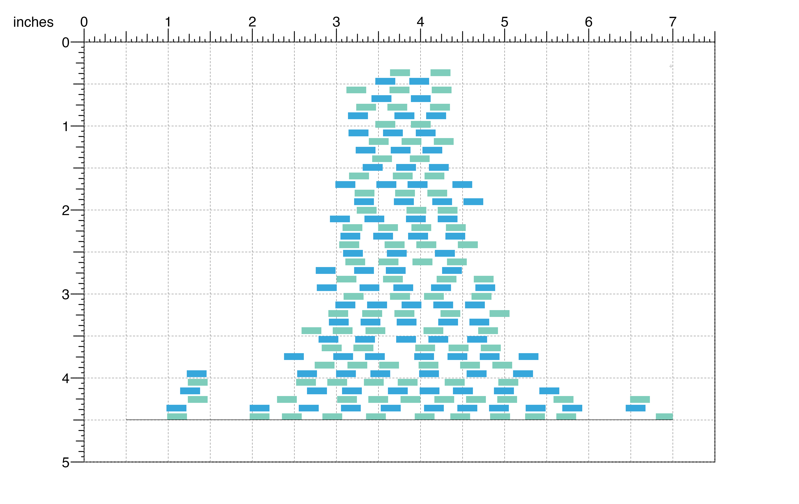
colorby
The colorby constructor allows us to color the data elements in BentoBox plots by various data features. These features can be a numerical range, like some kind of score value, or categorical values, like positive or negative strand. The colorby object is constructed by specifying the name of the data column to color by and an optional range for numerical values.
For example, if we revist the BED plot above, bb_bedData has an additional strand column for each BED element:
data("bb_bedData")
head(bb_bedData)
#> chrom start end strand
#> 15554862 chr21 28000052 28000088 -
#> 15554863 chr21 28000092 28000128 -
#> 15554864 chr21 28000162 28000198 -
#> 15554865 chr21 28000251 28000287 +
#> 15554866 chr21 28000335 28000371 -
#> 15554867 chr21 28000500 28000536 +Thus, we can use the colorby constructor to color BED elements by positive or negative strand. The strand column will be converted to a factor with a - level and + level. These values will be assigned to the fill colors in the order of these factors.
bb_plotBed(data = bb_bedData,
chrom = "chr21", chromstart = 29073000, chromend = 29074000,
fill = c("#7ecdbb", "#37a7db"),
colorby = colorby("strand"),
x = 0.5, y = 0.25, width = 6.5, height = 4.25,
just = c("left", "top"), default.units = "inches")
To further control the order of color assignment, we can set our categorical colorby column as a factor with our own order of levels before plotting:
data("bb_bedData")
bb_bedData$strand <- as.factor(bb_bedData$strand)
levels(bb_bedData$strand) <- c("+", "-")
head(bb_bedData$strand)
#> [1] + + + - + -
#> Levels: + -Now we’ve set the + level as our first level, so the first value in fill will color the plus-stranded elements and the second fill value will color the minus-stranded elements:
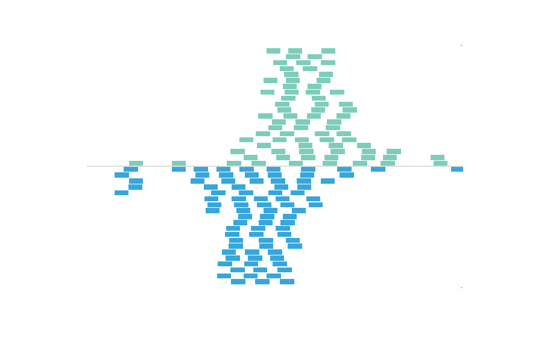
In this example, we will color BEDPE arches by a range of numerical values we will add as a length column:
data("bb_bedpeData")
bb_bedpeData$length <- (bb_bedpeData$start2 - bb_bedpeData$start1) / 1000
head(bb_bedpeData$length)
#> [1] 65 1960 2100 850 1200 1485Now we can set fill as a palette to color the BEDPE length column by:
bedpePlot <- bb_plotBedpeArches(data = bb_bedpeData,
chrom = "chr21", chromstart = 27900000, chromend = 30700000,
fill = colorRampPalette(c("dodgerblue2", "firebrick2")),
linecolor = "fill",
colorby = colorby("length"),
archHeight = bb_bedpeData$length / max(bb_bedpeData$length),
alpha = 1,
x = 0.25, y = 0.25, width = 7, height = 1.5,
just = c("left", "top"),
default.units = "inches")And now since we have numbers mapped to colors, we can use bb_annoHeatmapLegend() with our bb_arches object to add a legend for the colorby we performed:
bb_annoHeatmapLegend(plot = bedpePlot, fontcolor = "black",
x = 7.0, y = 0.25,
width = 0.10, height = 1, fontsize = 10)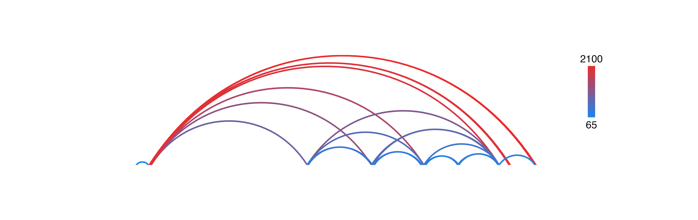
Gene and transcript plot aesthetics
BentoBox provides many useful features specific for enhancing gene and transcript visualizations:
Labels
Since BentoBox utilizes TxDb objects, orgDb objects, and internal citation information, BentoBox has access to numerous gene and transcript identifiers and can customize annotation labels in a variety of ways.
By default, BentoBox will rank gene labels according to citation number to prevent label overcrowding. However, we can provide our own list of prioritized genes to label in a plot. For example, if we plot the hg19 genes in the region chr2:1000000-20000000, our plot will show these labels:
bb_pageCreate(width = 5, height = 1.25, showGuides = FALSE, xgrid = 0, ygrid = 0)
genePlot <- bb_plotGenes(chrom = "chr2", chromstart = 1000000, chromend = 20000000,
x = 0.25, y = 0.25, width = 4.75, height = 1) Looking in the
Looking in the bb_genes object, we can see that there were numerous genes that were not labeled.
genePlot$genes
#> [1] "MIR3125" "RNASEH1-AS1" "LOC100506274" "MIR4757" "LINC00570"
#> [6] "C2orf50" "SLC66A3" "SILC1" "LRATD1" "DDX1"
#> [11] "LPIN1" "ATP6V1C2" "IAH1" "TRIB2" "GRHL1"
#> [16] "HPCAL1" "ID2" "MSGN1" "GEN1" NA
#> [21] "KCNF1" "KCNS3" "LOC400940" "MYCN" "TRAPPC12"
#> [26] "CPSF3" "SNTG2" "ALLC" "RPS7" "RRM2"
#> [31] "SOX11" "TPO" "MYT1L-AS1" "VSNL1" "COLEC11"
#> [36] "KLF11" "ASAP2" "TAF1B" "RSAD2" "GREB1"
#> [41] "RNF144A" "SNORA80B" "MIR4261" "MIR4262" "LINC01304"
#> [46] "LOC100506474" "NT5C1B-RDH14" "MIR4429" "PDIA6" "MYCNOS"
#> [51] "YWHAQ" "CMPK2" "MBOAT2" "OSR1" "E2F6"
#> [56] "CYS1" "MYT1L" "NTSR2" "RNASEH1" "FLJ33534"
#> [61] "LINC00298" "LINC00299" "GRASLND" "LINC00487" "ODC1"
#> [66] "NBAS" "ADI1" "KIDINS220" "RDH14" "ADAM17"
#> [71] "EIPR1" "LINC01249" "RAD51AP2" "PXDN" "SMC6"
#> [76] "NOL10" "CYRIA" "ITGB1BP1" "NT5C1B" "ROCK2"If we were particularly interested in MIR3125, we could include this in the geneOrder parameter to prioritize its labeling:
bb_pageCreate(width = 5, height = 1.25, showGuides = FALSE, xgrid = 0, ygrid = 0)
genePlot <- bb_plotGenes(chrom = "chr2", chromstart = 1000000, chromend = 20000000,
geneOrder = c("MIR3125"),
x = 0.25, y = 0.25, width = 4.75, height = 1)
If we wanted to change the type of label in our plot, we can change the display.column parameter in a bb_assembly() object. The default display.column = "SYMBOL", but we could change this value to other available keytypes in the orgDb we are using. For example, if we wanted to display the associated Ensembl IDs, we would set display.column = "ENSEMBL":
new_hg19 <- bb_assembly(Genome = "id_hg19",
TxDb = "TxDb.Hsapiens.UCSC.hg19.knownGene",
OrgDb = "org.Hs.eg.db",
gene.id.column = "ENTREZID",
display.column = "ENSEMBL")
bb_pageCreate(width = 5, height = 1.25, showGuides = FALSE, xgrid = 0, ygrid = 0)
genePlot <- bb_plotGenes(chrom = "chr2", chromstart = 1000000, chromend = 20000000,
assembly = new_hg19,
x = 0.25, y = 0.25, width = 4.75, height = 1)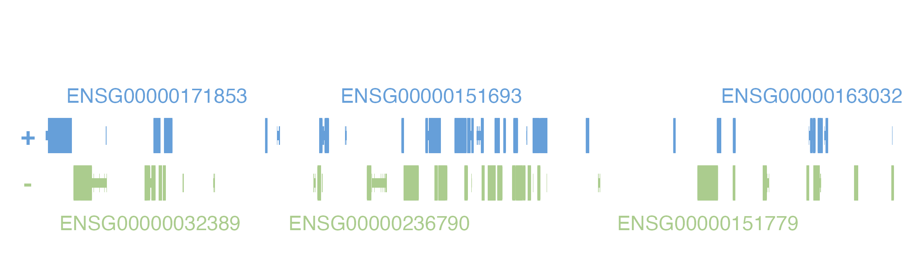
Label IDs used in transcript plots can be customized through bb_assembly() objects, and transcript label formatting can be changed through the labels parameter. For example, if we wish to display both transcript names and their associated gene names, we can set labels = "both":
bb_pageCreate(width = 6, height = 5, showGuides = FALSE, xgrid = 0, ygrid = 0)
transcriptPlot <- bb_plotTranscripts(chrom = "chr2", chromstart = 1000000, chromend = 20000000,
labels = "both",
x = 0.25, y = 0.25, width = 5.5, height = 4.5)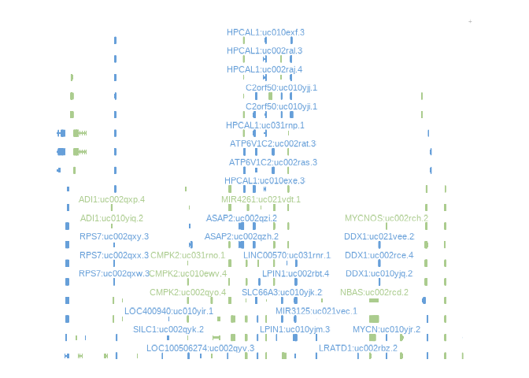
Highlighting genes by color
In addition to changing fill and fontcolor to change the colors of all genes in a plot, specific gene structures and their labels can be highlighted in a different color with geneHighlights. If we revisit the bb_genes plot above, we can highlight RRM2 by creating a data.frame with “RRM2” in the first column and its highlight color in the second column:
geneHighlights <- data.frame("geneName" = "RRM2", "color" = "steel blue")We can then pass this into our bb_plotGenes() call:
bb_pageCreate(width = 5, height = 1.25, showGuides = FALSE, xgrid = 0, ygrid = 0)
genePlot <- bb_plotGenes(chrom = "chr2", chromstart = 1000000, chromend = 20000000,
geneHighlights = geneHighlights, geneBackground = "grey",
x = 0.25, y = 0.25, width = 4.75, height = 1)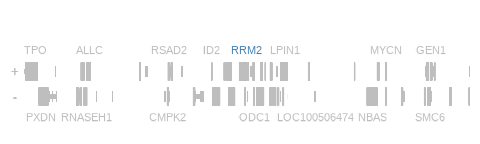
Since geneHighlights is a data.frame, we can highlight multiple genes in different colors at once. For example, let’s now highlight RRM2 in “steel blue” and PXDN in “red”:
geneHighlights <- data.frame("geneName" = c("RRM2", "PXDN"), "color" = c("steel blue", "red"))
bb_pageCreate(width = 5, height = 1.25, showGuides = FALSE, xgrid = 0, ygrid = 0)
genePlot <- bb_plotGenes(chrom = "chr2", chromstart = 1000000, chromend = 20000000,
geneHighlights = geneHighlights, geneBackground = "grey",
x = 0.25, y = 0.25, width = 4.75, height = 1)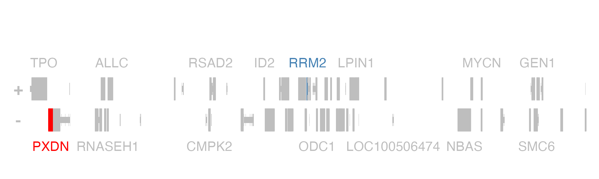
Customizing transcripts by strand
To distinguish which strand a transcript belongs to, bb_plotTranscripts() colors transcripts by strand with the parameter colorbyStrand. The first value in fill colors positive strand transcripts and the second fill value colors negative strand transcripts. To further organize transcripts by strand, we can use strandSplit to separate transcript elements into groups of positive and negative strands:
bb_pageCreate(width = 6, height = 5, showGuides = FALSE, xgrid = 0, ygrid = 0)
transcriptPlot <- bb_plotTranscripts(chrom = "chr2", chromstart = 1000000, chromend = 20000000,
strandSplit = TRUE,
x = 0.25, y = 0.25, width = 5.5, height = 4.5)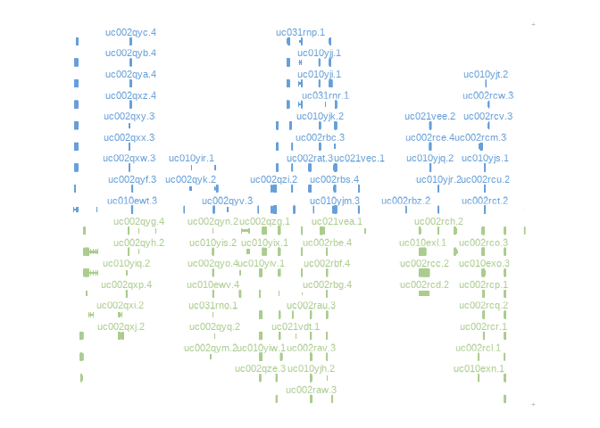
Now all our positive strand transcripts are grouped together above the group of negative strand transcripts.
Hi-C plot customizations
BentoBox includes many types of customizations for Hi-C plots. BentoBox provides 3 different Hi-C plotting functions based on the desired plot shape:
bb_plotHicSquare(): Plots a square, symmetrical Hi-C plot with genomic coordinates along both the x- and y-axes.bb_plotHicTriangle(): Plots a triangular Hi-C plot where the genome region falls along the base of the triangle.bb_plotHicRectangle(): Plots a triangular Hi-C plot with additional data filling the surrounding regions to form a rectangle.
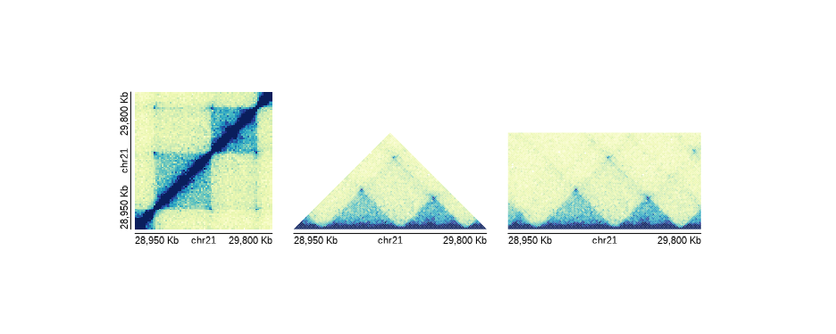
All Hi-C plot types can use different color palettes, and colors can be linearly or log-scaled with the colorTrans parameter.
bb_hicSquare plots can be further customized to include two datasets in one plot. Instead of plotting both symmetrical halves of the plot, we can set one dataset as half = "top" and the other dataset as half = "bottom":
data("bb_gmHicData")
data("bb_imrHicData")
bb_pageCreate(width = 3.25, height = 3.25, default.units = "inches",
showGuides = FALSE, xgrid = 0, ygrid = 0)
params <- bb_params(chrom = "chr21", chromstart = 28000000, chromend = 30300000,
assembly = "hg19", resolution = 10000,
x = 0.25, width = 2.75, just = c("left", "top"), default.units = "inches")
hicPlot_top <- bb_plotHicSquare(data = bb_gmHicData, params = params,
zrange = c(0, 200),
half = "top",
y = 0.25, height = 2.75)
hicPlot_bottom <- bb_plotHicSquare(data = bb_imrHicData, params = params,
zrange = c(0, 70),
half = "bottom",
y = 0.25, height = 2.75)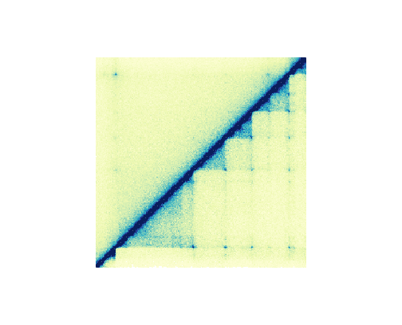